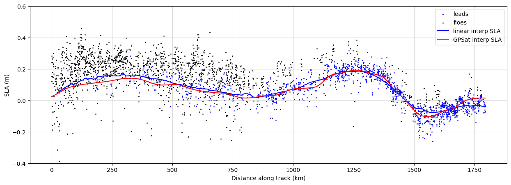

GPSat Along-Track Interpolation#
Materials can be accessed here.
The main objective of this notebook is to:
Extract along-track observations from GPOD processed data, including elevation, classification (lead/floe), and interpolated sea level anomaly (SLA).
Apply GPSat’s along-track interpolation to estimate SLA at all observation points (leads and floes).
Compare GPSat’s interpolated SLA against the linear interpolation.
Visualiae and assess the differences in interpolated SLA along specific satellite tracks, particularly over leads and floes.
The comparison helps evaluate the benefit of spatio-temporal interpolation using Gaussian Processes (GPSat) versus simple linear interpolation.
Import GPSat#
! pip install cartopy
Collecting cartopy
Downloading Cartopy-0.24.1-cp311-cp311-manylinux_2_17_x86_64.manylinux2014_x86_64.whl.metadata (7.9 kB)
Requirement already satisfied: numpy>=1.23 in /usr/local/lib/python3.11/dist-packages (from cartopy) (1.26.4)
Requirement already satisfied: matplotlib>=3.6 in /usr/local/lib/python3.11/dist-packages (from cartopy) (3.10.0)
Requirement already satisfied: shapely>=1.8 in /usr/local/lib/python3.11/dist-packages (from cartopy) (2.0.7)
Requirement already satisfied: packaging>=21 in /usr/local/lib/python3.11/dist-packages (from cartopy) (24.2)
Requirement already satisfied: pyshp>=2.3 in /usr/local/lib/python3.11/dist-packages (from cartopy) (2.3.1)
Requirement already satisfied: pyproj>=3.3.1 in /usr/local/lib/python3.11/dist-packages (from cartopy) (3.7.1)
Requirement already satisfied: contourpy>=1.0.1 in /usr/local/lib/python3.11/dist-packages (from matplotlib>=3.6->cartopy) (1.3.1)
Requirement already satisfied: cycler>=0.10 in /usr/local/lib/python3.11/dist-packages (from matplotlib>=3.6->cartopy) (0.12.1)
Requirement already satisfied: fonttools>=4.22.0 in /usr/local/lib/python3.11/dist-packages (from matplotlib>=3.6->cartopy) (4.56.0)
Requirement already satisfied: kiwisolver>=1.3.1 in /usr/local/lib/python3.11/dist-packages (from matplotlib>=3.6->cartopy) (1.4.8)
Requirement already satisfied: pillow>=8 in /usr/local/lib/python3.11/dist-packages (from matplotlib>=3.6->cartopy) (11.1.0)
Requirement already satisfied: pyparsing>=2.3.1 in /usr/local/lib/python3.11/dist-packages (from matplotlib>=3.6->cartopy) (3.2.1)
Requirement already satisfied: python-dateutil>=2.7 in /usr/local/lib/python3.11/dist-packages (from matplotlib>=3.6->cartopy) (2.8.2)
Requirement already satisfied: certifi in /usr/local/lib/python3.11/dist-packages (from pyproj>=3.3.1->cartopy) (2025.1.31)
Requirement already satisfied: six>=1.5 in /usr/local/lib/python3.11/dist-packages (from python-dateutil>=2.7->matplotlib>=3.6->cartopy) (1.17.0)
Downloading Cartopy-0.24.1-cp311-cp311-manylinux_2_17_x86_64.manylinux2014_x86_64.whl (11.7 MB)
━━━━━━━━━━━━━━━━━━━━━━━━━━━━━━━━━━━━━━━━ 11.7/11.7 MB 70.0 MB/s eta 0:00:00
?25hInstalling collected packages: cartopy
Successfully installed cartopy-0.24.1
try:
import google.colab
IN_COLAB = True
except:
IN_COLAB = False
# TODO: allow for mounting of gdrive
# TODO: allow for checking out a branch
if IN_COLAB:
import os
import re
# change to working directory
work_dir = "/content"
assert os.path.exists(work_dir), f"workspace directory: {work_dir} does not exist"
os.chdir(work_dir)
# clone repository
!git clone https://github.com/CPOMUCL/GPSat.git
repo_dir = os.path.join(work_dir, "GPSat")
print(f"changing directory to: {repo_dir}")
os.chdir(repo_dir)
Cloning into 'GPSat'...
remote: Enumerating objects: 2873, done.
remote: Counting objects: 100% (272/272), done.
remote: Compressing objects: 100% (114/114), done.
remote: Total 2873 (delta 143), reused 253 (delta 139), pack-reused 2601 (from 1)
Receiving objects: 100% (2873/2873), 59.92 MiB | 10.61 MiB/s, done.
Resolving deltas: 100% (1959/1959), done.
Updating files: 100% (127/127), done.
changing directory to: /content/GPSat
if IN_COLAB:
!pip install -r requirements.txt
Ignoring setuptools: markers 'python_version >= "3.12"' don't match your environment
Ignoring tensorflow: markers 'platform_system == "Darwin" and platform_machine == "x86_64"' don't match your environment
Ignoring tensorflow-macos: markers 'platform_system == "Darwin" and platform_machine == "arm64"' don't match your environment
Ignoring gpflow: markers 'platform_system == "Darwin" and platform_machine == "arm64"' don't match your environment
Requirement already satisfied: astropy>=5.1.1 in /usr/local/lib/python3.11/dist-packages (from -r requirements.txt (line 5)) (7.0.1)
Requirement already satisfied: chardet>=4.0.0 in /usr/local/lib/python3.11/dist-packages (from -r requirements.txt (line 6)) (5.2.0)
Collecting pandas==1.5.3 (from -r requirements.txt (line 7))
Downloading pandas-1.5.3-cp311-cp311-manylinux_2_17_x86_64.manylinux2014_x86_64.whl.metadata (11 kB)
Collecting tensorflow<2.16.0,>=2.14.0 (from tensorflow[and-cuda]<2.16.0,>=2.14.0->-r requirements.txt (line 11))
Downloading tensorflow-2.15.1-cp311-cp311-manylinux_2_17_x86_64.manylinux2014_x86_64.whl.metadata (4.2 kB)
Collecting tensorflow-probability<0.24.0 (from -r requirements.txt (line 14))
Downloading tensorflow_probability-0.23.0-py2.py3-none-any.whl.metadata (13 kB)
Collecting gpflow>=2.9.0 (from -r requirements.txt (line 25))
Downloading gpflow-2.9.2-py3-none-any.whl.metadata (13 kB)
Collecting gpytorch==1.10 (from -r requirements.txt (line 28))
Downloading gpytorch-1.10-py3-none-any.whl.metadata (7.4 kB)
Requirement already satisfied: matplotlib>=3.6.2 in /usr/local/lib/python3.11/dist-packages (from -r requirements.txt (line 29)) (3.10.0)
Requirement already satisfied: scipy>=1.9.3 in /usr/local/lib/python3.11/dist-packages (from -r requirements.txt (line 30)) (1.13.1)
Requirement already satisfied: tables>=3.7.0 in /usr/local/lib/python3.11/dist-packages (from -r requirements.txt (line 31)) (3.10.2)
Collecting netCDF4==1.6.2 (from -r requirements.txt (line 32))
Downloading netCDF4-1.6.2-cp311-cp311-manylinux_2_17_x86_64.manylinux2014_x86_64.whl.metadata (1.6 kB)
Requirement already satisfied: xarray>=2022.10.0 in /usr/local/lib/python3.11/dist-packages (from -r requirements.txt (line 33)) (2025.1.2)
Requirement already satisfied: gast>=0.4.0 in /usr/local/lib/python3.11/dist-packages (from -r requirements.txt (line 34)) (0.6.0)
Requirement already satisfied: pyproj>=3.4.0 in /usr/local/lib/python3.11/dist-packages (from -r requirements.txt (line 35)) (3.7.1)
Requirement already satisfied: seaborn>=0.11.2 in /usr/local/lib/python3.11/dist-packages (from -r requirements.txt (line 36)) (0.13.2)
Collecting jupyter==1.0.0 (from -r requirements.txt (line 37))
Downloading jupyter-1.0.0-py2.py3-none-any.whl.metadata (995 bytes)
Collecting scikit-learn==1.2.2 (from -r requirements.txt (line 38))
Downloading scikit_learn-1.2.2-cp311-cp311-manylinux_2_17_x86_64.manylinux2014_x86_64.whl.metadata (11 kB)
Requirement already satisfied: numba>=0.56.4 in /usr/local/lib/python3.11/dist-packages (from -r requirements.txt (line 39)) (0.60.0)
Requirement already satisfied: pytest>=7.2.0 in /usr/local/lib/python3.11/dist-packages (from -r requirements.txt (line 40)) (8.3.5)
Collecting dataclasses-json==0.5.7 (from -r requirements.txt (line 41))
Downloading dataclasses_json-0.5.7-py3-none-any.whl.metadata (22 kB)
Collecting global-land-mask==1.0.0 (from -r requirements.txt (line 42))
Downloading global_land_mask-1.0.0-py3-none-any.whl.metadata (5.2 kB)
Collecting cartopy==0.22.0 (from -r requirements.txt (line 43))
Downloading Cartopy-0.22.0-cp311-cp311-manylinux_2_17_x86_64.manylinux2014_x86_64.whl.metadata (15 kB)
Collecting fastparquet>=2024.2.0 (from -r requirements.txt (line 44))
Downloading fastparquet-2024.11.0-cp311-cp311-manylinux_2_17_x86_64.manylinux2014_x86_64.whl.metadata (4.2 kB)
Requirement already satisfied: pyarrow>=15.0.2 in /usr/local/lib/python3.11/dist-packages (from -r requirements.txt (line 45)) (18.1.0)
Requirement already satisfied: Sphinx>=5.0.2 in /usr/local/lib/python3.11/dist-packages (from -r requirements.txt (line 50)) (8.1.3)
Collecting nbsphinx>=0.9.3 (from -r requirements.txt (line 51))
Downloading nbsphinx-0.9.7-py3-none-any.whl.metadata (2.3 kB)
Collecting numpydoc>=1.6.0 (from -r requirements.txt (line 52))
Downloading numpydoc-1.8.0-py3-none-any.whl.metadata (4.3 kB)
Collecting sphinxemoji>=0.2.0 (from -r requirements.txt (line 53))
Downloading sphinxemoji-0.3.1-py3-none-any.whl.metadata (922 bytes)
Collecting sphinx-rtd-theme>=1.3.0 (from -r requirements.txt (line 54))
Downloading sphinx_rtd_theme-3.0.2-py2.py3-none-any.whl.metadata (4.4 kB)
Requirement already satisfied: python-dateutil>=2.8.1 in /usr/local/lib/python3.11/dist-packages (from pandas==1.5.3->-r requirements.txt (line 7)) (2.8.2)
Requirement already satisfied: pytz>=2020.1 in /usr/local/lib/python3.11/dist-packages (from pandas==1.5.3->-r requirements.txt (line 7)) (2025.1)
Requirement already satisfied: numpy>=1.21.0 in /usr/local/lib/python3.11/dist-packages (from pandas==1.5.3->-r requirements.txt (line 7)) (1.26.4)
Collecting linear-operator>=0.4.0 (from gpytorch==1.10->-r requirements.txt (line 28))
Downloading linear_operator-0.6-py3-none-any.whl.metadata (15 kB)
Collecting cftime (from netCDF4==1.6.2->-r requirements.txt (line 32))
Downloading cftime-1.6.4.post1-cp311-cp311-manylinux_2_17_x86_64.manylinux2014_x86_64.whl.metadata (8.7 kB)
Requirement already satisfied: notebook in /usr/local/lib/python3.11/dist-packages (from jupyter==1.0.0->-r requirements.txt (line 37)) (6.5.5)
Collecting qtconsole (from jupyter==1.0.0->-r requirements.txt (line 37))
Downloading qtconsole-5.6.1-py3-none-any.whl.metadata (5.0 kB)
Requirement already satisfied: jupyter-console in /usr/local/lib/python3.11/dist-packages (from jupyter==1.0.0->-r requirements.txt (line 37)) (6.1.0)
Requirement already satisfied: nbconvert in /usr/local/lib/python3.11/dist-packages (from jupyter==1.0.0->-r requirements.txt (line 37)) (7.16.6)
Requirement already satisfied: ipykernel in /usr/local/lib/python3.11/dist-packages (from jupyter==1.0.0->-r requirements.txt (line 37)) (6.17.1)
Requirement already satisfied: ipywidgets in /usr/local/lib/python3.11/dist-packages (from jupyter==1.0.0->-r requirements.txt (line 37)) (7.7.1)
Requirement already satisfied: joblib>=1.1.1 in /usr/local/lib/python3.11/dist-packages (from scikit-learn==1.2.2->-r requirements.txt (line 38)) (1.4.2)
Requirement already satisfied: threadpoolctl>=2.0.0 in /usr/local/lib/python3.11/dist-packages (from scikit-learn==1.2.2->-r requirements.txt (line 38)) (3.5.0)
Collecting marshmallow<4.0.0,>=3.3.0 (from dataclasses-json==0.5.7->-r requirements.txt (line 41))
Downloading marshmallow-3.26.1-py3-none-any.whl.metadata (7.3 kB)
Collecting marshmallow-enum<2.0.0,>=1.5.1 (from dataclasses-json==0.5.7->-r requirements.txt (line 41))
Downloading marshmallow_enum-1.5.1-py2.py3-none-any.whl.metadata (2.5 kB)
Collecting typing-inspect>=0.4.0 (from dataclasses-json==0.5.7->-r requirements.txt (line 41))
Downloading typing_inspect-0.9.0-py3-none-any.whl.metadata (1.5 kB)
Requirement already satisfied: shapely>=1.7 in /usr/local/lib/python3.11/dist-packages (from cartopy==0.22.0->-r requirements.txt (line 43)) (2.0.7)
Requirement already satisfied: packaging>=20 in /usr/local/lib/python3.11/dist-packages (from cartopy==0.22.0->-r requirements.txt (line 43)) (24.2)
Requirement already satisfied: pyshp>=2.1 in /usr/local/lib/python3.11/dist-packages (from cartopy==0.22.0->-r requirements.txt (line 43)) (2.3.1)
Requirement already satisfied: pyerfa>=2.0.1.1 in /usr/local/lib/python3.11/dist-packages (from astropy>=5.1.1->-r requirements.txt (line 5)) (2.0.1.5)
Requirement already satisfied: astropy-iers-data>=0.2025.1.31.12.41.4 in /usr/local/lib/python3.11/dist-packages (from astropy>=5.1.1->-r requirements.txt (line 5)) (0.2025.3.3.0.34.45)
Requirement already satisfied: PyYAML>=6.0.0 in /usr/local/lib/python3.11/dist-packages (from astropy>=5.1.1->-r requirements.txt (line 5)) (6.0.2)
Requirement already satisfied: absl-py>=1.0.0 in /usr/local/lib/python3.11/dist-packages (from tensorflow<2.16.0,>=2.14.0->tensorflow[and-cuda]<2.16.0,>=2.14.0->-r requirements.txt (line 11)) (1.4.0)
Requirement already satisfied: astunparse>=1.6.0 in /usr/local/lib/python3.11/dist-packages (from tensorflow<2.16.0,>=2.14.0->tensorflow[and-cuda]<2.16.0,>=2.14.0->-r requirements.txt (line 11)) (1.6.3)
Requirement already satisfied: flatbuffers>=23.5.26 in /usr/local/lib/python3.11/dist-packages (from tensorflow<2.16.0,>=2.14.0->tensorflow[and-cuda]<2.16.0,>=2.14.0->-r requirements.txt (line 11)) (25.2.10)
Requirement already satisfied: google-pasta>=0.1.1 in /usr/local/lib/python3.11/dist-packages (from tensorflow<2.16.0,>=2.14.0->tensorflow[and-cuda]<2.16.0,>=2.14.0->-r requirements.txt (line 11)) (0.2.0)
Requirement already satisfied: h5py>=2.9.0 in /usr/local/lib/python3.11/dist-packages (from tensorflow<2.16.0,>=2.14.0->tensorflow[and-cuda]<2.16.0,>=2.14.0->-r requirements.txt (line 11)) (3.12.1)
Requirement already satisfied: libclang>=13.0.0 in /usr/local/lib/python3.11/dist-packages (from tensorflow<2.16.0,>=2.14.0->tensorflow[and-cuda]<2.16.0,>=2.14.0->-r requirements.txt (line 11)) (18.1.1)
Collecting ml-dtypes~=0.3.1 (from tensorflow<2.16.0,>=2.14.0->tensorflow[and-cuda]<2.16.0,>=2.14.0->-r requirements.txt (line 11))
Downloading ml_dtypes-0.3.2-cp311-cp311-manylinux_2_17_x86_64.manylinux2014_x86_64.whl.metadata (20 kB)
Requirement already satisfied: opt-einsum>=2.3.2 in /usr/local/lib/python3.11/dist-packages (from tensorflow<2.16.0,>=2.14.0->tensorflow[and-cuda]<2.16.0,>=2.14.0->-r requirements.txt (line 11)) (3.4.0)
Requirement already satisfied: protobuf!=4.21.0,!=4.21.1,!=4.21.2,!=4.21.3,!=4.21.4,!=4.21.5,<5.0.0dev,>=3.20.3 in /usr/local/lib/python3.11/dist-packages (from tensorflow<2.16.0,>=2.14.0->tensorflow[and-cuda]<2.16.0,>=2.14.0->-r requirements.txt (line 11)) (4.25.6)
Requirement already satisfied: setuptools in /usr/local/lib/python3.11/dist-packages (from tensorflow<2.16.0,>=2.14.0->tensorflow[and-cuda]<2.16.0,>=2.14.0->-r requirements.txt (line 11)) (75.1.0)
Requirement already satisfied: six>=1.12.0 in /usr/local/lib/python3.11/dist-packages (from tensorflow<2.16.0,>=2.14.0->tensorflow[and-cuda]<2.16.0,>=2.14.0->-r requirements.txt (line 11)) (1.17.0)
Requirement already satisfied: termcolor>=1.1.0 in /usr/local/lib/python3.11/dist-packages (from tensorflow<2.16.0,>=2.14.0->tensorflow[and-cuda]<2.16.0,>=2.14.0->-r requirements.txt (line 11)) (2.5.0)
Requirement already satisfied: typing-extensions>=3.6.6 in /usr/local/lib/python3.11/dist-packages (from tensorflow<2.16.0,>=2.14.0->tensorflow[and-cuda]<2.16.0,>=2.14.0->-r requirements.txt (line 11)) (4.12.2)
Collecting wrapt<1.15,>=1.11.0 (from tensorflow<2.16.0,>=2.14.0->tensorflow[and-cuda]<2.16.0,>=2.14.0->-r requirements.txt (line 11))
Downloading wrapt-1.14.1-cp311-cp311-manylinux_2_5_x86_64.manylinux1_x86_64.manylinux_2_17_x86_64.manylinux2014_x86_64.whl.metadata (6.7 kB)
Requirement already satisfied: tensorflow-io-gcs-filesystem>=0.23.1 in /usr/local/lib/python3.11/dist-packages (from tensorflow<2.16.0,>=2.14.0->tensorflow[and-cuda]<2.16.0,>=2.14.0->-r requirements.txt (line 11)) (0.37.1)
Requirement already satisfied: grpcio<2.0,>=1.24.3 in /usr/local/lib/python3.11/dist-packages (from tensorflow<2.16.0,>=2.14.0->tensorflow[and-cuda]<2.16.0,>=2.14.0->-r requirements.txt (line 11)) (1.70.0)
Collecting tensorboard<2.16,>=2.15 (from tensorflow<2.16.0,>=2.14.0->tensorflow[and-cuda]<2.16.0,>=2.14.0->-r requirements.txt (line 11))
Downloading tensorboard-2.15.2-py3-none-any.whl.metadata (1.7 kB)
Collecting tensorflow-estimator<2.16,>=2.15.0 (from tensorflow<2.16.0,>=2.14.0->tensorflow[and-cuda]<2.16.0,>=2.14.0->-r requirements.txt (line 11))
Downloading tensorflow_estimator-2.15.0-py2.py3-none-any.whl.metadata (1.3 kB)
Collecting keras<2.16,>=2.15.0 (from tensorflow<2.16.0,>=2.14.0->tensorflow[and-cuda]<2.16.0,>=2.14.0->-r requirements.txt (line 11))
Downloading keras-2.15.0-py3-none-any.whl.metadata (2.4 kB)
Requirement already satisfied: decorator in /usr/local/lib/python3.11/dist-packages (from tensorflow-probability<0.24.0->-r requirements.txt (line 14)) (4.4.2)
Requirement already satisfied: cloudpickle>=1.3 in /usr/local/lib/python3.11/dist-packages (from tensorflow-probability<0.24.0->-r requirements.txt (line 14)) (3.1.1)
Requirement already satisfied: dm-tree in /usr/local/lib/python3.11/dist-packages (from tensorflow-probability<0.24.0->-r requirements.txt (line 14)) (0.1.9)
Collecting check-shapes>=1.0.0 (from gpflow>=2.9.0->-r requirements.txt (line 25))
Downloading check_shapes-1.1.1-py3-none-any.whl.metadata (2.4 kB)
Requirement already satisfied: deprecated in /usr/local/lib/python3.11/dist-packages (from gpflow>=2.9.0->-r requirements.txt (line 25)) (1.2.18)
Requirement already satisfied: multipledispatch>=0.6 in /usr/local/lib/python3.11/dist-packages (from gpflow>=2.9.0->-r requirements.txt (line 25)) (1.0.0)
Requirement already satisfied: tabulate in /usr/local/lib/python3.11/dist-packages (from gpflow>=2.9.0->-r requirements.txt (line 25)) (0.9.0)
Requirement already satisfied: contourpy>=1.0.1 in /usr/local/lib/python3.11/dist-packages (from matplotlib>=3.6.2->-r requirements.txt (line 29)) (1.3.1)
Requirement already satisfied: cycler>=0.10 in /usr/local/lib/python3.11/dist-packages (from matplotlib>=3.6.2->-r requirements.txt (line 29)) (0.12.1)
Requirement already satisfied: fonttools>=4.22.0 in /usr/local/lib/python3.11/dist-packages (from matplotlib>=3.6.2->-r requirements.txt (line 29)) (4.56.0)
Requirement already satisfied: kiwisolver>=1.3.1 in /usr/local/lib/python3.11/dist-packages (from matplotlib>=3.6.2->-r requirements.txt (line 29)) (1.4.8)
Requirement already satisfied: pillow>=8 in /usr/local/lib/python3.11/dist-packages (from matplotlib>=3.6.2->-r requirements.txt (line 29)) (11.1.0)
Requirement already satisfied: pyparsing>=2.3.1 in /usr/local/lib/python3.11/dist-packages (from matplotlib>=3.6.2->-r requirements.txt (line 29)) (3.2.1)
Requirement already satisfied: numexpr>=2.6.2 in /usr/local/lib/python3.11/dist-packages (from tables>=3.7.0->-r requirements.txt (line 31)) (2.10.2)
Requirement already satisfied: py-cpuinfo in /usr/local/lib/python3.11/dist-packages (from tables>=3.7.0->-r requirements.txt (line 31)) (9.0.0)
Requirement already satisfied: blosc2>=2.3.0 in /usr/local/lib/python3.11/dist-packages (from tables>=3.7.0->-r requirements.txt (line 31)) (3.2.0)
INFO: pip is looking at multiple versions of xarray to determine which version is compatible with other requirements. This could take a while.
Collecting xarray>=2022.10.0 (from -r requirements.txt (line 33))
Downloading xarray-2025.1.1-py3-none-any.whl.metadata (11 kB)
Downloading xarray-2025.1.0-py3-none-any.whl.metadata (11 kB)
Downloading xarray-2024.11.0-py3-none-any.whl.metadata (11 kB)
Downloading xarray-2024.10.0-py3-none-any.whl.metadata (11 kB)
Downloading xarray-2024.9.0-py3-none-any.whl.metadata (11 kB)
Downloading xarray-2024.7.0-py3-none-any.whl.metadata (11 kB)
Downloading xarray-2024.6.0-py3-none-any.whl.metadata (11 kB)
INFO: pip is still looking at multiple versions of xarray to determine which version is compatible with other requirements. This could take a while.
Downloading xarray-2024.5.0-py3-none-any.whl.metadata (11 kB)
Downloading xarray-2024.3.0-py3-none-any.whl.metadata (11 kB)
Requirement already satisfied: certifi in /usr/local/lib/python3.11/dist-packages (from pyproj>=3.4.0->-r requirements.txt (line 35)) (2025.1.31)
Requirement already satisfied: llvmlite<0.44,>=0.43.0dev0 in /usr/local/lib/python3.11/dist-packages (from numba>=0.56.4->-r requirements.txt (line 39)) (0.43.0)
Requirement already satisfied: iniconfig in /usr/local/lib/python3.11/dist-packages (from pytest>=7.2.0->-r requirements.txt (line 40)) (2.0.0)
Requirement already satisfied: pluggy<2,>=1.5 in /usr/local/lib/python3.11/dist-packages (from pytest>=7.2.0->-r requirements.txt (line 40)) (1.5.0)
Requirement already satisfied: cramjam>=2.3 in /usr/local/lib/python3.11/dist-packages (from fastparquet>=2024.2.0->-r requirements.txt (line 44)) (2.9.1)
Requirement already satisfied: fsspec in /usr/local/lib/python3.11/dist-packages (from fastparquet>=2024.2.0->-r requirements.txt (line 44)) (2024.10.0)
Requirement already satisfied: sphinxcontrib-applehelp>=1.0.7 in /usr/local/lib/python3.11/dist-packages (from Sphinx>=5.0.2->-r requirements.txt (line 50)) (2.0.0)
Requirement already satisfied: sphinxcontrib-devhelp>=1.0.6 in /usr/local/lib/python3.11/dist-packages (from Sphinx>=5.0.2->-r requirements.txt (line 50)) (2.0.0)
Requirement already satisfied: sphinxcontrib-htmlhelp>=2.0.6 in /usr/local/lib/python3.11/dist-packages (from Sphinx>=5.0.2->-r requirements.txt (line 50)) (2.1.0)
Requirement already satisfied: sphinxcontrib-jsmath>=1.0.1 in /usr/local/lib/python3.11/dist-packages (from Sphinx>=5.0.2->-r requirements.txt (line 50)) (1.0.1)
Requirement already satisfied: sphinxcontrib-qthelp>=1.0.6 in /usr/local/lib/python3.11/dist-packages (from Sphinx>=5.0.2->-r requirements.txt (line 50)) (2.0.0)
Requirement already satisfied: sphinxcontrib-serializinghtml>=1.1.9 in /usr/local/lib/python3.11/dist-packages (from Sphinx>=5.0.2->-r requirements.txt (line 50)) (2.0.0)
Requirement already satisfied: Jinja2>=3.1 in /usr/local/lib/python3.11/dist-packages (from Sphinx>=5.0.2->-r requirements.txt (line 50)) (3.1.5)
Requirement already satisfied: Pygments>=2.17 in /usr/local/lib/python3.11/dist-packages (from Sphinx>=5.0.2->-r requirements.txt (line 50)) (2.18.0)
Requirement already satisfied: docutils<0.22,>=0.20 in /usr/local/lib/python3.11/dist-packages (from Sphinx>=5.0.2->-r requirements.txt (line 50)) (0.21.2)
Requirement already satisfied: snowballstemmer>=2.2 in /usr/local/lib/python3.11/dist-packages (from Sphinx>=5.0.2->-r requirements.txt (line 50)) (2.2.0)
Requirement already satisfied: babel>=2.13 in /usr/local/lib/python3.11/dist-packages (from Sphinx>=5.0.2->-r requirements.txt (line 50)) (2.17.0)
Requirement already satisfied: alabaster>=0.7.14 in /usr/local/lib/python3.11/dist-packages (from Sphinx>=5.0.2->-r requirements.txt (line 50)) (1.0.0)
Requirement already satisfied: imagesize>=1.3 in /usr/local/lib/python3.11/dist-packages (from Sphinx>=5.0.2->-r requirements.txt (line 50)) (1.4.1)
Requirement already satisfied: requests>=2.30.0 in /usr/local/lib/python3.11/dist-packages (from Sphinx>=5.0.2->-r requirements.txt (line 50)) (2.32.3)
Requirement already satisfied: traitlets>=5 in /usr/local/lib/python3.11/dist-packages (from nbsphinx>=0.9.3->-r requirements.txt (line 51)) (5.7.1)
Requirement already satisfied: nbformat in /usr/local/lib/python3.11/dist-packages (from nbsphinx>=0.9.3->-r requirements.txt (line 51)) (5.10.4)
Collecting sphinxcontrib-jquery<5,>=4 (from sphinx-rtd-theme>=1.3.0->-r requirements.txt (line 54))
Downloading sphinxcontrib_jquery-4.1-py2.py3-none-any.whl.metadata (2.6 kB)
Collecting nvidia-cublas-cu12==12.2.5.6 (from tensorflow[and-cuda]<2.16.0,>=2.14.0->-r requirements.txt (line 11))
Downloading nvidia_cublas_cu12-12.2.5.6-py3-none-manylinux1_x86_64.whl.metadata (1.5 kB)
Collecting nvidia-cuda-cupti-cu12==12.2.142 (from tensorflow[and-cuda]<2.16.0,>=2.14.0->-r requirements.txt (line 11))
Downloading nvidia_cuda_cupti_cu12-12.2.142-py3-none-manylinux1_x86_64.whl.metadata (1.6 kB)
Collecting nvidia-cuda-nvcc-cu12==12.2.140 (from tensorflow[and-cuda]<2.16.0,>=2.14.0->-r requirements.txt (line 11))
Downloading nvidia_cuda_nvcc_cu12-12.2.140-py3-none-manylinux1_x86_64.whl.metadata (1.5 kB)
Collecting nvidia-cuda-nvrtc-cu12==12.2.140 (from tensorflow[and-cuda]<2.16.0,>=2.14.0->-r requirements.txt (line 11))
Downloading nvidia_cuda_nvrtc_cu12-12.2.140-py3-none-manylinux1_x86_64.whl.metadata (1.5 kB)
Collecting nvidia-cuda-runtime-cu12==12.2.140 (from tensorflow[and-cuda]<2.16.0,>=2.14.0->-r requirements.txt (line 11))
Downloading nvidia_cuda_runtime_cu12-12.2.140-py3-none-manylinux1_x86_64.whl.metadata (1.5 kB)
Collecting nvidia-cudnn-cu12==8.9.4.25 (from tensorflow[and-cuda]<2.16.0,>=2.14.0->-r requirements.txt (line 11))
Downloading nvidia_cudnn_cu12-8.9.4.25-py3-none-manylinux1_x86_64.whl.metadata (1.6 kB)
Collecting nvidia-cufft-cu12==11.0.8.103 (from tensorflow[and-cuda]<2.16.0,>=2.14.0->-r requirements.txt (line 11))
Downloading nvidia_cufft_cu12-11.0.8.103-py3-none-manylinux1_x86_64.whl.metadata (1.5 kB)
Collecting nvidia-curand-cu12==10.3.3.141 (from tensorflow[and-cuda]<2.16.0,>=2.14.0->-r requirements.txt (line 11))
Downloading nvidia_curand_cu12-10.3.3.141-py3-none-manylinux1_x86_64.whl.metadata (1.5 kB)
Collecting nvidia-cusolver-cu12==11.5.2.141 (from tensorflow[and-cuda]<2.16.0,>=2.14.0->-r requirements.txt (line 11))
Downloading nvidia_cusolver_cu12-11.5.2.141-py3-none-manylinux1_x86_64.whl.metadata (1.6 kB)
Collecting nvidia-cusparse-cu12==12.1.2.141 (from tensorflow[and-cuda]<2.16.0,>=2.14.0->-r requirements.txt (line 11))
Downloading nvidia_cusparse_cu12-12.1.2.141-py3-none-manylinux1_x86_64.whl.metadata (1.6 kB)
Collecting nvidia-nccl-cu12==2.16.5 (from tensorflow[and-cuda]<2.16.0,>=2.14.0->-r requirements.txt (line 11))
Downloading nvidia_nccl_cu12-2.16.5-py3-none-manylinux1_x86_64.whl.metadata (1.8 kB)
Collecting nvidia-nvjitlink-cu12==12.2.140 (from tensorflow[and-cuda]<2.16.0,>=2.14.0->-r requirements.txt (line 11))
Downloading nvidia_nvjitlink_cu12-12.2.140-py3-none-manylinux1_x86_64.whl.metadata (1.5 kB)
Requirement already satisfied: wheel<1.0,>=0.23.0 in /usr/local/lib/python3.11/dist-packages (from astunparse>=1.6.0->tensorflow<2.16.0,>=2.14.0->tensorflow[and-cuda]<2.16.0,>=2.14.0->-r requirements.txt (line 11)) (0.45.1)
Requirement already satisfied: ndindex in /usr/local/lib/python3.11/dist-packages (from blosc2>=2.3.0->tables>=3.7.0->-r requirements.txt (line 31)) (1.9.2)
Requirement already satisfied: msgpack in /usr/local/lib/python3.11/dist-packages (from blosc2>=2.3.0->tables>=3.7.0->-r requirements.txt (line 31)) (1.1.0)
Requirement already satisfied: platformdirs in /usr/local/lib/python3.11/dist-packages (from blosc2>=2.3.0->tables>=3.7.0->-r requirements.txt (line 31)) (4.3.6)
Collecting dropstackframe>=0.1.0 (from check-shapes>=1.0.0->gpflow>=2.9.0->-r requirements.txt (line 25))
Downloading dropstackframe-0.1.1-py3-none-any.whl.metadata (4.3 kB)
Collecting lark<2.0.0,>=1.1.0 (from check-shapes>=1.0.0->gpflow>=2.9.0->-r requirements.txt (line 25))
Downloading lark-1.2.2-py3-none-any.whl.metadata (1.8 kB)
Requirement already satisfied: MarkupSafe>=2.0 in /usr/local/lib/python3.11/dist-packages (from Jinja2>=3.1->Sphinx>=5.0.2->-r requirements.txt (line 50)) (3.0.2)
Requirement already satisfied: torch>=2.0 in /usr/local/lib/python3.11/dist-packages (from linear-operator>=0.4.0->gpytorch==1.10->-r requirements.txt (line 28)) (2.5.1+cu124)
Collecting jaxtyping (from linear-operator>=0.4.0->gpytorch==1.10->-r requirements.txt (line 28))
Downloading jaxtyping-0.2.38-py3-none-any.whl.metadata (6.6 kB)
Requirement already satisfied: mpmath<=1.3,>=0.19 in /usr/local/lib/python3.11/dist-packages (from linear-operator>=0.4.0->gpytorch==1.10->-r requirements.txt (line 28)) (1.3.0)
Requirement already satisfied: beautifulsoup4 in /usr/local/lib/python3.11/dist-packages (from nbconvert->jupyter==1.0.0->-r requirements.txt (line 37)) (4.13.3)
Requirement already satisfied: bleach!=5.0.0 in /usr/local/lib/python3.11/dist-packages (from bleach[css]!=5.0.0->nbconvert->jupyter==1.0.0->-r requirements.txt (line 37)) (6.2.0)
Requirement already satisfied: defusedxml in /usr/local/lib/python3.11/dist-packages (from nbconvert->jupyter==1.0.0->-r requirements.txt (line 37)) (0.7.1)
Requirement already satisfied: jupyter-core>=4.7 in /usr/local/lib/python3.11/dist-packages (from nbconvert->jupyter==1.0.0->-r requirements.txt (line 37)) (5.7.2)
Requirement already satisfied: jupyterlab-pygments in /usr/local/lib/python3.11/dist-packages (from nbconvert->jupyter==1.0.0->-r requirements.txt (line 37)) (0.3.0)
Requirement already satisfied: mistune<4,>=2.0.3 in /usr/local/lib/python3.11/dist-packages (from nbconvert->jupyter==1.0.0->-r requirements.txt (line 37)) (3.1.2)
Requirement already satisfied: nbclient>=0.5.0 in /usr/local/lib/python3.11/dist-packages (from nbconvert->jupyter==1.0.0->-r requirements.txt (line 37)) (0.10.2)
Requirement already satisfied: pandocfilters>=1.4.1 in /usr/local/lib/python3.11/dist-packages (from nbconvert->jupyter==1.0.0->-r requirements.txt (line 37)) (1.5.1)
Requirement already satisfied: fastjsonschema>=2.15 in /usr/local/lib/python3.11/dist-packages (from nbformat->nbsphinx>=0.9.3->-r requirements.txt (line 51)) (2.21.1)
Requirement already satisfied: jsonschema>=2.6 in /usr/local/lib/python3.11/dist-packages (from nbformat->nbsphinx>=0.9.3->-r requirements.txt (line 51)) (4.23.0)
Requirement already satisfied: charset-normalizer<4,>=2 in /usr/local/lib/python3.11/dist-packages (from requests>=2.30.0->Sphinx>=5.0.2->-r requirements.txt (line 50)) (3.4.1)
Requirement already satisfied: idna<4,>=2.5 in /usr/local/lib/python3.11/dist-packages (from requests>=2.30.0->Sphinx>=5.0.2->-r requirements.txt (line 50)) (3.10)
Requirement already satisfied: urllib3<3,>=1.21.1 in /usr/local/lib/python3.11/dist-packages (from requests>=2.30.0->Sphinx>=5.0.2->-r requirements.txt (line 50)) (2.3.0)
Requirement already satisfied: google-auth<3,>=1.6.3 in /usr/local/lib/python3.11/dist-packages (from tensorboard<2.16,>=2.15->tensorflow<2.16.0,>=2.14.0->tensorflow[and-cuda]<2.16.0,>=2.14.0->-r requirements.txt (line 11)) (2.38.0)
Requirement already satisfied: google-auth-oauthlib<2,>=0.5 in /usr/local/lib/python3.11/dist-packages (from tensorboard<2.16,>=2.15->tensorflow<2.16.0,>=2.14.0->tensorflow[and-cuda]<2.16.0,>=2.14.0->-r requirements.txt (line 11)) (1.2.1)
Requirement already satisfied: markdown>=2.6.8 in /usr/local/lib/python3.11/dist-packages (from tensorboard<2.16,>=2.15->tensorflow<2.16.0,>=2.14.0->tensorflow[and-cuda]<2.16.0,>=2.14.0->-r requirements.txt (line 11)) (3.7)
Requirement already satisfied: tensorboard-data-server<0.8.0,>=0.7.0 in /usr/local/lib/python3.11/dist-packages (from tensorboard<2.16,>=2.15->tensorflow<2.16.0,>=2.14.0->tensorflow[and-cuda]<2.16.0,>=2.14.0->-r requirements.txt (line 11)) (0.7.2)
Requirement already satisfied: werkzeug>=1.0.1 in /usr/local/lib/python3.11/dist-packages (from tensorboard<2.16,>=2.15->tensorflow<2.16.0,>=2.14.0->tensorflow[and-cuda]<2.16.0,>=2.14.0->-r requirements.txt (line 11)) (3.1.3)
WARNING: tensorflow-probability 0.23.0 does not provide the extra 'tf'
Collecting mypy-extensions>=0.3.0 (from typing-inspect>=0.4.0->dataclasses-json==0.5.7->-r requirements.txt (line 41))
Downloading mypy_extensions-1.0.0-py3-none-any.whl.metadata (1.1 kB)
Requirement already satisfied: attrs>=18.2.0 in /usr/local/lib/python3.11/dist-packages (from dm-tree->tensorflow-probability<0.24.0->-r requirements.txt (line 14)) (25.1.0)
Requirement already satisfied: debugpy>=1.0 in /usr/local/lib/python3.11/dist-packages (from ipykernel->jupyter==1.0.0->-r requirements.txt (line 37)) (1.8.0)
Requirement already satisfied: ipython>=7.23.1 in /usr/local/lib/python3.11/dist-packages (from ipykernel->jupyter==1.0.0->-r requirements.txt (line 37)) (7.34.0)
Requirement already satisfied: jupyter-client>=6.1.12 in /usr/local/lib/python3.11/dist-packages (from ipykernel->jupyter==1.0.0->-r requirements.txt (line 37)) (6.1.12)
Requirement already satisfied: matplotlib-inline>=0.1 in /usr/local/lib/python3.11/dist-packages (from ipykernel->jupyter==1.0.0->-r requirements.txt (line 37)) (0.1.7)
Requirement already satisfied: nest-asyncio in /usr/local/lib/python3.11/dist-packages (from ipykernel->jupyter==1.0.0->-r requirements.txt (line 37)) (1.6.0)
Requirement already satisfied: psutil in /usr/local/lib/python3.11/dist-packages (from ipykernel->jupyter==1.0.0->-r requirements.txt (line 37)) (5.9.5)
Requirement already satisfied: pyzmq>=17 in /usr/local/lib/python3.11/dist-packages (from ipykernel->jupyter==1.0.0->-r requirements.txt (line 37)) (24.0.1)
Requirement already satisfied: tornado>=6.1 in /usr/local/lib/python3.11/dist-packages (from ipykernel->jupyter==1.0.0->-r requirements.txt (line 37)) (6.4.2)
Requirement already satisfied: ipython-genutils~=0.2.0 in /usr/local/lib/python3.11/dist-packages (from ipywidgets->jupyter==1.0.0->-r requirements.txt (line 37)) (0.2.0)
Requirement already satisfied: widgetsnbextension~=3.6.0 in /usr/local/lib/python3.11/dist-packages (from ipywidgets->jupyter==1.0.0->-r requirements.txt (line 37)) (3.6.10)
Requirement already satisfied: jupyterlab-widgets>=1.0.0 in /usr/local/lib/python3.11/dist-packages (from ipywidgets->jupyter==1.0.0->-r requirements.txt (line 37)) (3.0.13)
Requirement already satisfied: prompt-toolkit!=3.0.0,!=3.0.1,<3.1.0,>=2.0.0 in /usr/local/lib/python3.11/dist-packages (from jupyter-console->jupyter==1.0.0->-r requirements.txt (line 37)) (3.0.50)
Requirement already satisfied: argon2-cffi in /usr/local/lib/python3.11/dist-packages (from notebook->jupyter==1.0.0->-r requirements.txt (line 37)) (23.1.0)
Requirement already satisfied: Send2Trash>=1.8.0 in /usr/local/lib/python3.11/dist-packages (from notebook->jupyter==1.0.0->-r requirements.txt (line 37)) (1.8.3)
Requirement already satisfied: terminado>=0.8.3 in /usr/local/lib/python3.11/dist-packages (from notebook->jupyter==1.0.0->-r requirements.txt (line 37)) (0.18.1)
Requirement already satisfied: prometheus-client in /usr/local/lib/python3.11/dist-packages (from notebook->jupyter==1.0.0->-r requirements.txt (line 37)) (0.21.1)
Requirement already satisfied: nbclassic>=0.4.7 in /usr/local/lib/python3.11/dist-packages (from notebook->jupyter==1.0.0->-r requirements.txt (line 37)) (1.2.0)
Collecting qtpy>=2.4.0 (from qtconsole->jupyter==1.0.0->-r requirements.txt (line 37))
Downloading QtPy-2.4.3-py3-none-any.whl.metadata (12 kB)
Requirement already satisfied: webencodings in /usr/local/lib/python3.11/dist-packages (from bleach!=5.0.0->bleach[css]!=5.0.0->nbconvert->jupyter==1.0.0->-r requirements.txt (line 37)) (0.5.1)
Requirement already satisfied: tinycss2<1.5,>=1.1.0 in /usr/local/lib/python3.11/dist-packages (from bleach[css]!=5.0.0->nbconvert->jupyter==1.0.0->-r requirements.txt (line 37)) (1.4.0)
Requirement already satisfied: cachetools<6.0,>=2.0.0 in /usr/local/lib/python3.11/dist-packages (from google-auth<3,>=1.6.3->tensorboard<2.16,>=2.15->tensorflow<2.16.0,>=2.14.0->tensorflow[and-cuda]<2.16.0,>=2.14.0->-r requirements.txt (line 11)) (5.5.2)
Requirement already satisfied: pyasn1-modules>=0.2.1 in /usr/local/lib/python3.11/dist-packages (from google-auth<3,>=1.6.3->tensorboard<2.16,>=2.15->tensorflow<2.16.0,>=2.14.0->tensorflow[and-cuda]<2.16.0,>=2.14.0->-r requirements.txt (line 11)) (0.4.1)
Requirement already satisfied: rsa<5,>=3.1.4 in /usr/local/lib/python3.11/dist-packages (from google-auth<3,>=1.6.3->tensorboard<2.16,>=2.15->tensorflow<2.16.0,>=2.14.0->tensorflow[and-cuda]<2.16.0,>=2.14.0->-r requirements.txt (line 11)) (4.9)
Requirement already satisfied: requests-oauthlib>=0.7.0 in /usr/local/lib/python3.11/dist-packages (from google-auth-oauthlib<2,>=0.5->tensorboard<2.16,>=2.15->tensorflow<2.16.0,>=2.14.0->tensorflow[and-cuda]<2.16.0,>=2.14.0->-r requirements.txt (line 11)) (2.0.0)
Collecting jedi>=0.16 (from ipython>=7.23.1->ipykernel->jupyter==1.0.0->-r requirements.txt (line 37))
Downloading jedi-0.19.2-py2.py3-none-any.whl.metadata (22 kB)
Requirement already satisfied: pickleshare in /usr/local/lib/python3.11/dist-packages (from ipython>=7.23.1->ipykernel->jupyter==1.0.0->-r requirements.txt (line 37)) (0.7.5)
Requirement already satisfied: backcall in /usr/local/lib/python3.11/dist-packages (from ipython>=7.23.1->ipykernel->jupyter==1.0.0->-r requirements.txt (line 37)) (0.2.0)
Requirement already satisfied: pexpect>4.3 in /usr/local/lib/python3.11/dist-packages (from ipython>=7.23.1->ipykernel->jupyter==1.0.0->-r requirements.txt (line 37)) (4.9.0)
Requirement already satisfied: jsonschema-specifications>=2023.03.6 in /usr/local/lib/python3.11/dist-packages (from jsonschema>=2.6->nbformat->nbsphinx>=0.9.3->-r requirements.txt (line 51)) (2024.10.1)
Requirement already satisfied: referencing>=0.28.4 in /usr/local/lib/python3.11/dist-packages (from jsonschema>=2.6->nbformat->nbsphinx>=0.9.3->-r requirements.txt (line 51)) (0.36.2)
Requirement already satisfied: rpds-py>=0.7.1 in /usr/local/lib/python3.11/dist-packages (from jsonschema>=2.6->nbformat->nbsphinx>=0.9.3->-r requirements.txt (line 51)) (0.23.1)
Requirement already satisfied: notebook-shim>=0.2.3 in /usr/local/lib/python3.11/dist-packages (from nbclassic>=0.4.7->notebook->jupyter==1.0.0->-r requirements.txt (line 37)) (0.2.4)
Requirement already satisfied: wcwidth in /usr/local/lib/python3.11/dist-packages (from prompt-toolkit!=3.0.0,!=3.0.1,<3.1.0,>=2.0.0->jupyter-console->jupyter==1.0.0->-r requirements.txt (line 37)) (0.2.13)
Requirement already satisfied: ptyprocess in /usr/local/lib/python3.11/dist-packages (from terminado>=0.8.3->notebook->jupyter==1.0.0->-r requirements.txt (line 37)) (0.7.0)
Requirement already satisfied: filelock in /usr/local/lib/python3.11/dist-packages (from torch>=2.0->linear-operator>=0.4.0->gpytorch==1.10->-r requirements.txt (line 28)) (3.17.0)
Requirement already satisfied: networkx in /usr/local/lib/python3.11/dist-packages (from torch>=2.0->linear-operator>=0.4.0->gpytorch==1.10->-r requirements.txt (line 28)) (3.4.2)
INFO: pip is looking at multiple versions of torch to determine which version is compatible with other requirements. This could take a while.
Collecting torch>=2.0 (from linear-operator>=0.4.0->gpytorch==1.10->-r requirements.txt (line 28))
Downloading torch-2.6.0-cp311-cp311-manylinux1_x86_64.whl.metadata (28 kB)
Downloading torch-2.5.1-cp311-cp311-manylinux1_x86_64.whl.metadata (28 kB)
Downloading torch-2.5.0-cp311-cp311-manylinux1_x86_64.whl.metadata (28 kB)
Downloading torch-2.4.1-cp311-cp311-manylinux1_x86_64.whl.metadata (26 kB)
Requirement already satisfied: sympy in /usr/local/lib/python3.11/dist-packages (from torch>=2.0->linear-operator>=0.4.0->gpytorch==1.10->-r requirements.txt (line 28)) (1.13.1)
Downloading torch-2.4.0-cp311-cp311-manylinux1_x86_64.whl.metadata (26 kB)
Downloading torch-2.3.1-cp311-cp311-manylinux1_x86_64.whl.metadata (26 kB)
Downloading torch-2.3.0-cp311-cp311-manylinux1_x86_64.whl.metadata (26 kB)
INFO: pip is still looking at multiple versions of torch to determine which version is compatible with other requirements. This could take a while.
Downloading torch-2.2.2-cp311-cp311-manylinux1_x86_64.whl.metadata (25 kB)
Downloading torch-2.2.1-cp311-cp311-manylinux1_x86_64.whl.metadata (26 kB)
Downloading torch-2.2.0-cp311-cp311-manylinux1_x86_64.whl.metadata (25 kB)
Downloading torch-2.1.2-cp311-cp311-manylinux1_x86_64.whl.metadata (25 kB)
Downloading torch-2.1.1-cp311-cp311-manylinux1_x86_64.whl.metadata (25 kB)
INFO: This is taking longer than usual. You might need to provide the dependency resolver with stricter constraints to reduce runtime. See https://pip.pypa.io/warnings/backtracking for guidance. If you want to abort this run, press Ctrl + C.
Downloading torch-2.1.0-cp311-cp311-manylinux1_x86_64.whl.metadata (25 kB)
Downloading torch-2.0.1-cp311-cp311-manylinux1_x86_64.whl.metadata (24 kB)
Collecting nvidia-cuda-nvrtc-cu11==11.7.99 (from torch>=2.0->linear-operator>=0.4.0->gpytorch==1.10->-r requirements.txt (line 28))
Downloading nvidia_cuda_nvrtc_cu11-11.7.99-2-py3-none-manylinux1_x86_64.whl.metadata (1.5 kB)
Collecting nvidia-cuda-runtime-cu11==11.7.99 (from torch>=2.0->linear-operator>=0.4.0->gpytorch==1.10->-r requirements.txt (line 28))
Downloading nvidia_cuda_runtime_cu11-11.7.99-py3-none-manylinux1_x86_64.whl.metadata (1.6 kB)
Collecting nvidia-cuda-cupti-cu11==11.7.101 (from torch>=2.0->linear-operator>=0.4.0->gpytorch==1.10->-r requirements.txt (line 28))
Downloading nvidia_cuda_cupti_cu11-11.7.101-py3-none-manylinux1_x86_64.whl.metadata (1.6 kB)
Collecting nvidia-cudnn-cu11==8.5.0.96 (from torch>=2.0->linear-operator>=0.4.0->gpytorch==1.10->-r requirements.txt (line 28))
Downloading nvidia_cudnn_cu11-8.5.0.96-2-py3-none-manylinux1_x86_64.whl.metadata (1.6 kB)
Collecting nvidia-cublas-cu11==11.10.3.66 (from torch>=2.0->linear-operator>=0.4.0->gpytorch==1.10->-r requirements.txt (line 28))
Downloading nvidia_cublas_cu11-11.10.3.66-py3-none-manylinux1_x86_64.whl.metadata (1.6 kB)
Collecting nvidia-cufft-cu11==10.9.0.58 (from torch>=2.0->linear-operator>=0.4.0->gpytorch==1.10->-r requirements.txt (line 28))
Downloading nvidia_cufft_cu11-10.9.0.58-py3-none-manylinux2014_x86_64.whl.metadata (1.5 kB)
Collecting nvidia-curand-cu11==10.2.10.91 (from torch>=2.0->linear-operator>=0.4.0->gpytorch==1.10->-r requirements.txt (line 28))
Downloading nvidia_curand_cu11-10.2.10.91-py3-none-manylinux1_x86_64.whl.metadata (1.6 kB)
Collecting nvidia-cusolver-cu11==11.4.0.1 (from torch>=2.0->linear-operator>=0.4.0->gpytorch==1.10->-r requirements.txt (line 28))
Downloading nvidia_cusolver_cu11-11.4.0.1-2-py3-none-manylinux1_x86_64.whl.metadata (1.6 kB)
Collecting nvidia-cusparse-cu11==11.7.4.91 (from torch>=2.0->linear-operator>=0.4.0->gpytorch==1.10->-r requirements.txt (line 28))
Downloading nvidia_cusparse_cu11-11.7.4.91-py3-none-manylinux1_x86_64.whl.metadata (1.6 kB)
Collecting nvidia-nccl-cu11==2.14.3 (from torch>=2.0->linear-operator>=0.4.0->gpytorch==1.10->-r requirements.txt (line 28))
Downloading nvidia_nccl_cu11-2.14.3-py3-none-manylinux1_x86_64.whl.metadata (1.8 kB)
Collecting nvidia-nvtx-cu11==11.7.91 (from torch>=2.0->linear-operator>=0.4.0->gpytorch==1.10->-r requirements.txt (line 28))
Downloading nvidia_nvtx_cu11-11.7.91-py3-none-manylinux1_x86_64.whl.metadata (1.7 kB)
Collecting triton==2.0.0 (from torch>=2.0->linear-operator>=0.4.0->gpytorch==1.10->-r requirements.txt (line 28))
Downloading triton-2.0.0-1-cp311-cp311-manylinux2014_x86_64.manylinux_2_17_x86_64.whl.metadata (1.0 kB)
Requirement already satisfied: cmake in /usr/local/lib/python3.11/dist-packages (from triton==2.0.0->torch>=2.0->linear-operator>=0.4.0->gpytorch==1.10->-r requirements.txt (line 28)) (3.31.6)
Collecting lit (from triton==2.0.0->torch>=2.0->linear-operator>=0.4.0->gpytorch==1.10->-r requirements.txt (line 28))
Downloading lit-18.1.8-py3-none-any.whl.metadata (2.5 kB)
Requirement already satisfied: argon2-cffi-bindings in /usr/local/lib/python3.11/dist-packages (from argon2-cffi->notebook->jupyter==1.0.0->-r requirements.txt (line 37)) (21.2.0)
Requirement already satisfied: soupsieve>1.2 in /usr/local/lib/python3.11/dist-packages (from beautifulsoup4->nbconvert->jupyter==1.0.0->-r requirements.txt (line 37)) (2.6)
Collecting wadler-lindig>=0.1.3 (from jaxtyping->linear-operator>=0.4.0->gpytorch==1.10->-r requirements.txt (line 28))
Downloading wadler_lindig-0.1.3-py3-none-any.whl.metadata (17 kB)
Requirement already satisfied: parso<0.9.0,>=0.8.4 in /usr/local/lib/python3.11/dist-packages (from jedi>=0.16->ipython>=7.23.1->ipykernel->jupyter==1.0.0->-r requirements.txt (line 37)) (0.8.4)
Requirement already satisfied: jupyter-server<3,>=1.8 in /usr/local/lib/python3.11/dist-packages (from notebook-shim>=0.2.3->nbclassic>=0.4.7->notebook->jupyter==1.0.0->-r requirements.txt (line 37)) (1.24.0)
Requirement already satisfied: pyasn1<0.7.0,>=0.4.6 in /usr/local/lib/python3.11/dist-packages (from pyasn1-modules>=0.2.1->google-auth<3,>=1.6.3->tensorboard<2.16,>=2.15->tensorflow<2.16.0,>=2.14.0->tensorflow[and-cuda]<2.16.0,>=2.14.0->-r requirements.txt (line 11)) (0.6.1)
Requirement already satisfied: oauthlib>=3.0.0 in /usr/local/lib/python3.11/dist-packages (from requests-oauthlib>=0.7.0->google-auth-oauthlib<2,>=0.5->tensorboard<2.16,>=2.15->tensorflow<2.16.0,>=2.14.0->tensorflow[and-cuda]<2.16.0,>=2.14.0->-r requirements.txt (line 11)) (3.2.2)
Requirement already satisfied: cffi>=1.0.1 in /usr/local/lib/python3.11/dist-packages (from argon2-cffi-bindings->argon2-cffi->notebook->jupyter==1.0.0->-r requirements.txt (line 37)) (1.17.1)
Requirement already satisfied: pycparser in /usr/local/lib/python3.11/dist-packages (from cffi>=1.0.1->argon2-cffi-bindings->argon2-cffi->notebook->jupyter==1.0.0->-r requirements.txt (line 37)) (2.22)
Requirement already satisfied: anyio<4,>=3.1.0 in /usr/local/lib/python3.11/dist-packages (from jupyter-server<3,>=1.8->notebook-shim>=0.2.3->nbclassic>=0.4.7->notebook->jupyter==1.0.0->-r requirements.txt (line 37)) (3.7.1)
Requirement already satisfied: websocket-client in /usr/local/lib/python3.11/dist-packages (from jupyter-server<3,>=1.8->notebook-shim>=0.2.3->nbclassic>=0.4.7->notebook->jupyter==1.0.0->-r requirements.txt (line 37)) (1.8.0)
Requirement already satisfied: sniffio>=1.1 in /usr/local/lib/python3.11/dist-packages (from anyio<4,>=3.1.0->jupyter-server<3,>=1.8->notebook-shim>=0.2.3->nbclassic>=0.4.7->notebook->jupyter==1.0.0->-r requirements.txt (line 37)) (1.3.1)
Downloading pandas-1.5.3-cp311-cp311-manylinux_2_17_x86_64.manylinux2014_x86_64.whl (12.0 MB)
━━━━━━━━━━━━━━━━━━━━━━━━━━━━━━━━━━━━━━━━ 12.0/12.0 MB 22.1 MB/s eta 0:00:00
?25hDownloading gpytorch-1.10-py3-none-any.whl (255 kB)
━━━━━━━━━━━━━━━━━━━━━━━━━━━━━━━━━━━━━━━━ 255.2/255.2 kB 18.1 MB/s eta 0:00:00
?25hDownloading netCDF4-1.6.2-cp311-cp311-manylinux_2_17_x86_64.manylinux2014_x86_64.whl (5.1 MB)
━━━━━━━━━━━━━━━━━━━━━━━━━━━━━━━━━━━━━━━━ 5.1/5.1 MB 14.0 MB/s eta 0:00:00
?25hDownloading jupyter-1.0.0-py2.py3-none-any.whl (2.7 kB)
Downloading scikit_learn-1.2.2-cp311-cp311-manylinux_2_17_x86_64.manylinux2014_x86_64.whl (9.6 MB)
━━━━━━━━━━━━━━━━━━━━━━━━━━━━━━━━━━━━━━━━ 9.6/9.6 MB 21.1 MB/s eta 0:00:00
?25hDownloading dataclasses_json-0.5.7-py3-none-any.whl (25 kB)
Downloading global_land_mask-1.0.0-py3-none-any.whl (1.8 MB)
━━━━━━━━━━━━━━━━━━━━━━━━━━━━━━━━━━━━━━━━ 1.8/1.8 MB 21.6 MB/s eta 0:00:00
?25hDownloading Cartopy-0.22.0-cp311-cp311-manylinux_2_17_x86_64.manylinux2014_x86_64.whl (11.9 MB)
━━━━━━━━━━━━━━━━━━━━━━━━━━━━━━━━━━━━━━━━ 11.9/11.9 MB 22.8 MB/s eta 0:00:00
?25hDownloading tensorflow-2.15.1-cp311-cp311-manylinux_2_17_x86_64.manylinux2014_x86_64.whl (475.3 MB)
━━━━━━━━━━━━━━━━━━━━━━━━━━━━━━━━━━━━━━━━ 475.3/475.3 MB 4.4 MB/s eta 0:00:00
?25hDownloading tensorflow_probability-0.23.0-py2.py3-none-any.whl (6.9 MB)
━━━━━━━━━━━━━━━━━━━━━━━━━━━━━━━━━━━━━━━━ 6.9/6.9 MB 96.3 MB/s eta 0:00:00
?25hDownloading gpflow-2.9.2-py3-none-any.whl (392 kB)
━━━━━━━━━━━━━━━━━━━━━━━━━━━━━━━━━━━━━━━━ 392.9/392.9 kB 38.0 MB/s eta 0:00:00
?25hDownloading xarray-2024.3.0-py3-none-any.whl (1.1 MB)
━━━━━━━━━━━━━━━━━━━━━━━━━━━━━━━━━━━━━━━━ 1.1/1.1 MB 68.4 MB/s eta 0:00:00
?25hDownloading fastparquet-2024.11.0-cp311-cp311-manylinux_2_17_x86_64.manylinux2014_x86_64.whl (1.8 MB)
━━━━━━━━━━━━━━━━━━━━━━━━━━━━━━━━━━━━━━━━ 1.8/1.8 MB 77.7 MB/s eta 0:00:00
?25hDownloading nbsphinx-0.9.7-py3-none-any.whl (31 kB)
Downloading numpydoc-1.8.0-py3-none-any.whl (64 kB)
━━━━━━━━━━━━━━━━━━━━━━━━━━━━━━━━━━━━━━━━ 64.0/64.0 kB 7.7 MB/s eta 0:00:00
?25hDownloading sphinxemoji-0.3.1-py3-none-any.whl (46 kB)
━━━━━━━━━━━━━━━━━━━━━━━━━━━━━━━━━━━━━━━━ 46.1/46.1 kB 5.2 MB/s eta 0:00:00
?25hDownloading sphinx_rtd_theme-3.0.2-py2.py3-none-any.whl (7.7 MB)
━━━━━━━━━━━━━━━━━━━━━━━━━━━━━━━━━━━━━━━━ 7.7/7.7 MB 107.1 MB/s eta 0:00:00
?25hDownloading nvidia_cublas_cu12-12.2.5.6-py3-none-manylinux1_x86_64.whl (417.8 MB)
━━━━━━━━━━━━━━━━━━━━━━━━━━━━━━━━━━━━━━━━ 417.8/417.8 MB 4.0 MB/s eta 0:00:00
?25hDownloading nvidia_cuda_cupti_cu12-12.2.142-py3-none-manylinux1_x86_64.whl (13.9 MB)
━━━━━━━━━━━━━━━━━━━━━━━━━━━━━━━━━━━━━━━━ 13.9/13.9 MB 27.8 MB/s eta 0:00:00
?25hDownloading nvidia_cuda_nvcc_cu12-12.2.140-py3-none-manylinux1_x86_64.whl (21.3 MB)
━━━━━━━━━━━━━━━━━━━━━━━━━━━━━━━━━━━━━━━━ 21.3/21.3 MB 41.7 MB/s eta 0:00:00
?25hDownloading nvidia_cuda_nvrtc_cu12-12.2.140-py3-none-manylinux1_x86_64.whl (23.4 MB)
━━━━━━━━━━━━━━━━━━━━━━━━━━━━━━━━━━━━━━━━ 23.4/23.4 MB 41.5 MB/s eta 0:00:00
?25hDownloading nvidia_cuda_runtime_cu12-12.2.140-py3-none-manylinux1_x86_64.whl (845 kB)
━━━━━━━━━━━━━━━━━━━━━━━━━━━━━━━━━━━━━━━━ 845.8/845.8 kB 44.5 MB/s eta 0:00:00
?25hDownloading nvidia_cudnn_cu12-8.9.4.25-py3-none-manylinux1_x86_64.whl (720.1 MB)
━━━━━━━━━━━━━━━━━━━━━━━━━━━━━━━━━━━━━━━━ 720.1/720.1 MB 1.2 MB/s eta 0:00:00
?25hDownloading nvidia_cufft_cu12-11.0.8.103-py3-none-manylinux1_x86_64.whl (98.6 MB)
━━━━━━━━━━━━━━━━━━━━━━━━━━━━━━━━━━━━━━━━ 98.6/98.6 MB 8.6 MB/s eta 0:00:00
?25hDownloading nvidia_curand_cu12-10.3.3.141-py3-none-manylinux1_x86_64.whl (56.5 MB)
━━━━━━━━━━━━━━━━━━━━━━━━━━━━━━━━━━━━━━━━ 56.5/56.5 MB 11.8 MB/s eta 0:00:00
?25hDownloading nvidia_cusolver_cu12-11.5.2.141-py3-none-manylinux1_x86_64.whl (124.9 MB)
━━━━━━━━━━━━━━━━━━━━━━━━━━━━━━━━━━━━━━━━ 124.9/124.9 MB 8.9 MB/s eta 0:00:00
?25hDownloading nvidia_cusparse_cu12-12.1.2.141-py3-none-manylinux1_x86_64.whl (195.3 MB)
━━━━━━━━━━━━━━━━━━━━━━━━━━━━━━━━━━━━━━━━ 195.3/195.3 MB 6.2 MB/s eta 0:00:00
?25hDownloading nvidia_nccl_cu12-2.16.5-py3-none-manylinux1_x86_64.whl (188.7 MB)
━━━━━━━━━━━━━━━━━━━━━━━━━━━━━━━━━━━━━━━━ 188.7/188.7 MB 6.5 MB/s eta 0:00:00
?25hDownloading nvidia_nvjitlink_cu12-12.2.140-py3-none-manylinux1_x86_64.whl (20.2 MB)
━━━━━━━━━━━━━━━━━━━━━━━━━━━━━━━━━━━━━━━━ 20.2/20.2 MB 71.9 MB/s eta 0:00:00
?25hDownloading check_shapes-1.1.1-py3-none-any.whl (45 kB)
━━━━━━━━━━━━━━━━━━━━━━━━━━━━━━━━━━━━━━━━ 45.8/45.8 kB 4.9 MB/s eta 0:00:00
?25hDownloading keras-2.15.0-py3-none-any.whl (1.7 MB)
━━━━━━━━━━━━━━━━━━━━━━━━━━━━━━━━━━━━━━━━ 1.7/1.7 MB 74.8 MB/s eta 0:00:00
?25hDownloading linear_operator-0.6-py3-none-any.whl (176 kB)
━━━━━━━━━━━━━━━━━━━━━━━━━━━━━━━━━━━━━━━━ 176.3/176.3 kB 19.2 MB/s eta 0:00:00
?25hDownloading marshmallow-3.26.1-py3-none-any.whl (50 kB)
━━━━━━━━━━━━━━━━━━━━━━━━━━━━━━━━━━━━━━━━ 50.9/50.9 kB 5.9 MB/s eta 0:00:00
?25hDownloading marshmallow_enum-1.5.1-py2.py3-none-any.whl (4.2 kB)
Downloading ml_dtypes-0.3.2-cp311-cp311-manylinux_2_17_x86_64.manylinux2014_x86_64.whl (2.2 MB)
━━━━━━━━━━━━━━━━━━━━━━━━━━━━━━━━━━━━━━━━ 2.2/2.2 MB 55.6 MB/s eta 0:00:00
?25hDownloading sphinxcontrib_jquery-4.1-py2.py3-none-any.whl (121 kB)
━━━━━━━━━━━━━━━━━━━━━━━━━━━━━━━━━━━━━━━━ 121.1/121.1 kB 14.6 MB/s eta 0:00:00
?25hDownloading tensorboard-2.15.2-py3-none-any.whl (5.5 MB)
━━━━━━━━━━━━━━━━━━━━━━━━━━━━━━━━━━━━━━━━ 5.5/5.5 MB 114.7 MB/s eta 0:00:00
?25hDownloading tensorflow_estimator-2.15.0-py2.py3-none-any.whl (441 kB)
━━━━━━━━━━━━━━━━━━━━━━━━━━━━━━━━━━━━━━━━ 442.0/442.0 kB 35.3 MB/s eta 0:00:00
?25hDownloading typing_inspect-0.9.0-py3-none-any.whl (8.8 kB)
Downloading wrapt-1.14.1-cp311-cp311-manylinux_2_5_x86_64.manylinux1_x86_64.manylinux_2_17_x86_64.manylinux2014_x86_64.whl (78 kB)
━━━━━━━━━━━━━━━━━━━━━━━━━━━━━━━━━━━━━━━━ 78.4/78.4 kB 9.3 MB/s eta 0:00:00
?25hDownloading cftime-1.6.4.post1-cp311-cp311-manylinux_2_17_x86_64.manylinux2014_x86_64.whl (1.4 MB)
━━━━━━━━━━━━━━━━━━━━━━━━━━━━━━━━━━━━━━━━ 1.4/1.4 MB 75.8 MB/s eta 0:00:00
?25hDownloading qtconsole-5.6.1-py3-none-any.whl (125 kB)
━━━━━━━━━━━━━━━━━━━━━━━━━━━━━━━━━━━━━━━━ 125.0/125.0 kB 13.5 MB/s eta 0:00:00
?25hDownloading dropstackframe-0.1.1-py3-none-any.whl (4.6 kB)
Downloading lark-1.2.2-py3-none-any.whl (111 kB)
━━━━━━━━━━━━━━━━━━━━━━━━━━━━━━━━━━━━━━━━ 111.0/111.0 kB 12.8 MB/s eta 0:00:00
?25hDownloading mypy_extensions-1.0.0-py3-none-any.whl (4.7 kB)
Downloading QtPy-2.4.3-py3-none-any.whl (95 kB)
━━━━━━━━━━━━━━━━━━━━━━━━━━━━━━━━━━━━━━━━ 95.0/95.0 kB 10.9 MB/s eta 0:00:00
?25hDownloading torch-2.0.1-cp311-cp311-manylinux1_x86_64.whl (619.9 MB)
━━━━━━━━━━━━━━━━━━━━━━━━━━━━━━━━━━━━━━━━ 619.9/619.9 MB 2.6 MB/s eta 0:00:00
?25hDownloading nvidia_cublas_cu11-11.10.3.66-py3-none-manylinux1_x86_64.whl (317.1 MB)
━━━━━━━━━━━━━━━━━━━━━━━━━━━━━━━━━━━━━━━━ 317.1/317.1 MB 4.4 MB/s eta 0:00:00
?25hDownloading nvidia_cuda_cupti_cu11-11.7.101-py3-none-manylinux1_x86_64.whl (11.8 MB)
━━━━━━━━━━━━━━━━━━━━━━━━━━━━━━━━━━━━━━━━ 11.8/11.8 MB 82.7 MB/s eta 0:00:00
?25hDownloading nvidia_cuda_nvrtc_cu11-11.7.99-2-py3-none-manylinux1_x86_64.whl (21.0 MB)
━━━━━━━━━━━━━━━━━━━━━━━━━━━━━━━━━━━━━━━━ 21.0/21.0 MB 75.3 MB/s eta 0:00:00
?25hDownloading nvidia_cuda_runtime_cu11-11.7.99-py3-none-manylinux1_x86_64.whl (849 kB)
━━━━━━━━━━━━━━━━━━━━━━━━━━━━━━━━━━━━━━━━ 849.3/849.3 kB 52.6 MB/s eta 0:00:00
?25hDownloading nvidia_cudnn_cu11-8.5.0.96-2-py3-none-manylinux1_x86_64.whl (557.1 MB)
━━━━━━━━━━━━━━━━━━━━━━━━━━━━━━━━━━━━━━━━ 557.1/557.1 MB 2.4 MB/s eta 0:00:00
?25hDownloading nvidia_cufft_cu11-10.9.0.58-py3-none-manylinux2014_x86_64.whl (168.4 MB)
━━━━━━━━━━━━━━━━━━━━━━━━━━━━━━━━━━━━━━━━ 168.4/168.4 MB 6.8 MB/s eta 0:00:00
?25hDownloading nvidia_curand_cu11-10.2.10.91-py3-none-manylinux1_x86_64.whl (54.6 MB)
━━━━━━━━━━━━━━━━━━━━━━━━━━━━━━━━━━━━━━━━ 54.6/54.6 MB 13.5 MB/s eta 0:00:00
?25hDownloading nvidia_cusolver_cu11-11.4.0.1-2-py3-none-manylinux1_x86_64.whl (102.6 MB)
━━━━━━━━━━━━━━━━━━━━━━━━━━━━━━━━━━━━━━━━ 102.6/102.6 MB 7.6 MB/s eta 0:00:00
?25hDownloading nvidia_cusparse_cu11-11.7.4.91-py3-none-manylinux1_x86_64.whl (173.2 MB)
━━━━━━━━━━━━━━━━━━━━━━━━━━━━━━━━━━━━━━━━ 173.2/173.2 MB 6.3 MB/s eta 0:00:00
?25hDownloading nvidia_nccl_cu11-2.14.3-py3-none-manylinux1_x86_64.whl (177.1 MB)
━━━━━━━━━━━━━━━━━━━━━━━━━━━━━━━━━━━━━━━━ 177.1/177.1 MB 6.6 MB/s eta 0:00:00
?25hDownloading nvidia_nvtx_cu11-11.7.91-py3-none-manylinux1_x86_64.whl (98 kB)
━━━━━━━━━━━━━━━━━━━━━━━━━━━━━━━━━━━━━━━━ 98.6/98.6 kB 11.6 MB/s eta 0:00:00
?25hDownloading triton-2.0.0-1-cp311-cp311-manylinux2014_x86_64.manylinux_2_17_x86_64.whl (63.3 MB)
━━━━━━━━━━━━━━━━━━━━━━━━━━━━━━━━━━━━━━━━ 63.3/63.3 MB 11.1 MB/s eta 0:00:00
?25hDownloading jaxtyping-0.2.38-py3-none-any.whl (56 kB)
━━━━━━━━━━━━━━━━━━━━━━━━━━━━━━━━━━━━━━━━ 56.4/56.4 kB 6.4 MB/s eta 0:00:00
?25hDownloading jedi-0.19.2-py2.py3-none-any.whl (1.6 MB)
━━━━━━━━━━━━━━━━━━━━━━━━━━━━━━━━━━━━━━━━ 1.6/1.6 MB 75.3 MB/s eta 0:00:00
?25hDownloading wadler_lindig-0.1.3-py3-none-any.whl (20 kB)
Downloading lit-18.1.8-py3-none-any.whl (96 kB)
━━━━━━━━━━━━━━━━━━━━━━━━━━━━━━━━━━━━━━━━ 96.4/96.4 kB 12.2 MB/s eta 0:00:00
?25hInstalling collected packages: lit, global-land-mask, wrapt, wadler-lindig, tensorflow-estimator, qtpy, nvidia-nvtx-cu11, nvidia-nvjitlink-cu12, nvidia-nccl-cu12, nvidia-nccl-cu11, nvidia-cusparse-cu11, nvidia-curand-cu12, nvidia-curand-cu11, nvidia-cufft-cu12, nvidia-cufft-cu11, nvidia-cuda-runtime-cu12, nvidia-cuda-runtime-cu11, nvidia-cuda-nvrtc-cu12, nvidia-cuda-nvrtc-cu11, nvidia-cuda-nvcc-cu12, nvidia-cuda-cupti-cu12, nvidia-cuda-cupti-cu11, nvidia-cublas-cu12, nvidia-cublas-cu11, mypy-extensions, ml-dtypes, marshmallow, lark, keras, jedi, dropstackframe, cftime, typing-inspect, scikit-learn, pandas, nvidia-cusparse-cu12, nvidia-cusolver-cu11, nvidia-cudnn-cu12, nvidia-cudnn-cu11, netCDF4, marshmallow-enum, jaxtyping, check-shapes, xarray, tensorflow-probability, sphinxemoji, sphinxcontrib-jquery, nvidia-cusolver-cu12, numpydoc, fastparquet, dataclasses-json, cartopy, tensorboard, sphinx-rtd-theme, qtconsole, tensorflow, gpflow, nbsphinx, jupyter, triton, torch, linear-operator, gpytorch
Attempting uninstall: wrapt
Found existing installation: wrapt 1.17.2
Uninstalling wrapt-1.17.2:
Successfully uninstalled wrapt-1.17.2
Attempting uninstall: nvidia-nvjitlink-cu12
Found existing installation: nvidia-nvjitlink-cu12 12.5.82
Uninstalling nvidia-nvjitlink-cu12-12.5.82:
Successfully uninstalled nvidia-nvjitlink-cu12-12.5.82
Attempting uninstall: nvidia-nccl-cu12
Found existing installation: nvidia-nccl-cu12 2.21.5
Uninstalling nvidia-nccl-cu12-2.21.5:
Successfully uninstalled nvidia-nccl-cu12-2.21.5
Attempting uninstall: nvidia-curand-cu12
Found existing installation: nvidia-curand-cu12 10.3.6.82
Uninstalling nvidia-curand-cu12-10.3.6.82:
if IN_COLAB:
!pip install -e .
import os
import re
import glob
import numpy as np
import pandas as pd
import warnings
# warnings.filterwarnings('ignore')
import matplotlib.pyplot as plt
import cartopy.crs as ccrs
import cartopy.feature as cfeat
from datetime import datetime, timedelta
from GPSat import get_data_path, get_parent_path
from GPSat.dataprepper import DataPrep
from GPSat.utils import WGS84toEASE2_New, EASE2toWGS84_New, cprint, grid_2d_flatten, get_weighted_values
from GPSat.local_experts import LocalExpertOI, get_results_from_h5file
from GPSat.plot_utils import plot_pcolormesh, get_projection, plot_pcolormesh_from_results_data
from GPSat.postprocessing import smooth_hyperparameters
import GPSat
from GPSat.postprocessing import glue_local_predictions_1d
from GPSat.postprocessing import glue_local_predictions_2d
def GCdist(X,Xs):
radius = lambda lat : np.sqrt(((6378137**2 * np.cos(lat))**2 + (6356752**2 * np.sin(lat))**2/\
(6378137 * np.cos(lat))**2 + (6356752 * np.sin(lat))**2))
minlat = min(np.min(X.T[(1,)].T),np.min(Xs.T[(1,)].T))
maxlat = max(np.max(X.T[(1,)].T),np.max(Xs.T[(1,)].T))
lon1 = np.radians(X.T[(0,)].T) ; lat1 = np.radians(X.T[(1,)].T)
lon2 = np.radians(Xs.T[(0,)].T) ; lat2 = np.radians(Xs.T[(1,)].T)
r = 6356752#np.mean(radius(np.arange(minlat,maxlat)))
Clat1 = np.cos(lat1) ; Clat2 = np.cos(lat2)
Slat1 = np.sin(lat1) ; Slat2 = np.sin(lat2)
Clon1 = np.cos(lon1) ; Clon2 = np.cos(lon2)
Slon1 = np.sin(lon1) ; Slon2 = np.sin(lon2)
n1 = np.array([Clat1*Clon1,Clat1*Slon1,Slat1]).T
n2 = np.array([Clat2*Clon2,Clat2*Slon2,Slat2]).T
return r*np.arccos(np.dot(n1,n2.T))
from google.colab import drive
drive.mount('/content/drive')
Drive already mounted at /content/drive; to attempt to forcibly remount, call drive.mount("/content/drive", force_remount=True).
Load data#
#indices for GPOD data:
#0 = Lon
#1 = Lat
#2 = Interpolated SLA
#3 = Error in interpolated SLA
#4 = Freeboard
#5 = Pulse Peakiness
#6 = Lew
#7 = Class (1=Lead, 2=Floe, 3=OO)
#8 = Sigma 0
#9 = Raw Elevation
#10 = Mean Sea-surface
#11 = SIC
#12 = Sea ice type (0=FYI, 1=MYI)
#13 = Snow depth
#14 = Snow density
#15 = Sea ice thickness
#16 = GPOD SLA
#17 = GPOD SSH
#18 = GPOD SWH
#19 = Elevation from Samosa
def process_track(track, grab_dates, satellite, count):
""" Process a single track file if it falls on a date of interest """
date = track.split('/')[-1].split('T')[0].split('_')[-1]
if date in grab_dates:
time = 14975 + (datetime.strptime(date, '%Y%m%d') - datetime(2011, 1, 1)).days
f = np.genfromtxt(track)
ID = np.where((f[:, 7] < 3) & (f[:, 11] >= 0.75))[0]
classes = np.where(f[ID, 7] == 1.0, 'lead', 'floe')
elvmss = f[ID, 9] - f[ID, 10]
elvmss[classes == 'floe'] -= 0.1626 # Apply bias correction (see Lawrence et al., 2019)
xg, yg = WGS84toEASE2_New(f[ID, 0], f[ID, 1])
N = len(xg)
# Initialise dataframe to store retrieved track data
track_df = pd.DataFrame()
track_df['x']= xg
track_df['y'] = yg
track_df['t'] = [time] * N
track_df['lon'] = f[ID, 0]
track_df['lat'] = f[ID, 1]
track_df['date'] = [date] * N
track_df['class'] = classes
track_df['interpSLA'] = f[ID, 2]
track_df['elevation'] = elvmss
track_df['SAT'] = [satellite] * N
track_df['track'] = [count] * N
return count + 1, track_df
return count, None
# Generate date range
interp_date = datetime(2019, 1, 15)
grab_dates = [(interp_date - timedelta(days=x)).strftime('%Y%m%d') for x in range(5)] + \
[(interp_date + timedelta(days=x)).strftime('%Y%m%d') for x in range(1, 5)]
# Path to directories
# dirs = sorted(glob.glob('/Users/wg4031/Dropbox/GPOD_DATA/*'))
# dirs = sorted(glob.glob('/content/drive/MyDrive/AI4EO/Week 8/GPOD/*'))
dirs = sorted(glob.glob('/content/drive/MyDrive/GEOL0069/2425/Week 8/GPOD/*'))
# Process tracks
track_dfs = []
count = 0
for directory in dirs:
satellite = directory.split('/')[-1]
if satellite in {'SARIN', 'SAR'}:
satellite = 'CS2'
for track in sorted(glob.glob(f"{directory}/*v1.proc")):
count, track_df = process_track(track, grab_dates, satellite, count)
if track_df is not None:
track_dfs.append(track_df)
#Create a single dataframe for all tracks
df = pd.concat(track_dfs, ignore_index=True)
df
<ipython-input-7-f0c6357dd9f7>:36: DeprecationWarning: Call to deprecated function (or staticmethod) WGS84toEASE2_New. (This function will be removed in future versions. Use `WGS84toEASE2` instead.)
xg, yg = WGS84toEASE2_New(f[ID, 0], f[ID, 1])
<ipython-input-7-f0c6357dd9f7>:36: DeprecationWarning: Call to deprecated function (or staticmethod) WGS84toEASE2_New. (This function will be removed in future versions. Use `WGS84toEASE2` instead.)
xg, yg = WGS84toEASE2_New(f[ID, 0], f[ID, 1])
<ipython-input-7-f0c6357dd9f7>:36: DeprecationWarning: Call to deprecated function (or staticmethod) WGS84toEASE2_New. (This function will be removed in future versions. Use `WGS84toEASE2` instead.)
xg, yg = WGS84toEASE2_New(f[ID, 0], f[ID, 1])
<ipython-input-7-f0c6357dd9f7>:36: DeprecationWarning: Call to deprecated function (or staticmethod) WGS84toEASE2_New. (This function will be removed in future versions. Use `WGS84toEASE2` instead.)
xg, yg = WGS84toEASE2_New(f[ID, 0], f[ID, 1])
<ipython-input-7-f0c6357dd9f7>:36: DeprecationWarning: Call to deprecated function (or staticmethod) WGS84toEASE2_New. (This function will be removed in future versions. Use `WGS84toEASE2` instead.)
xg, yg = WGS84toEASE2_New(f[ID, 0], f[ID, 1])
<ipython-input-7-f0c6357dd9f7>:36: DeprecationWarning: Call to deprecated function (or staticmethod) WGS84toEASE2_New. (This function will be removed in future versions. Use `WGS84toEASE2` instead.)
xg, yg = WGS84toEASE2_New(f[ID, 0], f[ID, 1])
<ipython-input-7-f0c6357dd9f7>:36: DeprecationWarning: Call to deprecated function (or staticmethod) WGS84toEASE2_New. (This function will be removed in future versions. Use `WGS84toEASE2` instead.)
xg, yg = WGS84toEASE2_New(f[ID, 0], f[ID, 1])
<ipython-input-7-f0c6357dd9f7>:36: DeprecationWarning: Call to deprecated function (or staticmethod) WGS84toEASE2_New. (This function will be removed in future versions. Use `WGS84toEASE2` instead.)
xg, yg = WGS84toEASE2_New(f[ID, 0], f[ID, 1])
<ipython-input-7-f0c6357dd9f7>:36: DeprecationWarning: Call to deprecated function (or staticmethod) WGS84toEASE2_New. (This function will be removed in future versions. Use `WGS84toEASE2` instead.)
xg, yg = WGS84toEASE2_New(f[ID, 0], f[ID, 1])
<ipython-input-7-f0c6357dd9f7>:36: DeprecationWarning: Call to deprecated function (or staticmethod) WGS84toEASE2_New. (This function will be removed in future versions. Use `WGS84toEASE2` instead.)
xg, yg = WGS84toEASE2_New(f[ID, 0], f[ID, 1])
<ipython-input-7-f0c6357dd9f7>:36: DeprecationWarning: Call to deprecated function (or staticmethod) WGS84toEASE2_New. (This function will be removed in future versions. Use `WGS84toEASE2` instead.)
xg, yg = WGS84toEASE2_New(f[ID, 0], f[ID, 1])
<ipython-input-7-f0c6357dd9f7>:36: DeprecationWarning: Call to deprecated function (or staticmethod) WGS84toEASE2_New. (This function will be removed in future versions. Use `WGS84toEASE2` instead.)
xg, yg = WGS84toEASE2_New(f[ID, 0], f[ID, 1])
<ipython-input-7-f0c6357dd9f7>:36: DeprecationWarning: Call to deprecated function (or staticmethod) WGS84toEASE2_New. (This function will be removed in future versions. Use `WGS84toEASE2` instead.)
xg, yg = WGS84toEASE2_New(f[ID, 0], f[ID, 1])
<ipython-input-7-f0c6357dd9f7>:36: DeprecationWarning: Call to deprecated function (or staticmethod) WGS84toEASE2_New. (This function will be removed in future versions. Use `WGS84toEASE2` instead.)
xg, yg = WGS84toEASE2_New(f[ID, 0], f[ID, 1])
<ipython-input-7-f0c6357dd9f7>:36: DeprecationWarning: Call to deprecated function (or staticmethod) WGS84toEASE2_New. (This function will be removed in future versions. Use `WGS84toEASE2` instead.)
xg, yg = WGS84toEASE2_New(f[ID, 0], f[ID, 1])
<ipython-input-7-f0c6357dd9f7>:36: DeprecationWarning: Call to deprecated function (or staticmethod) WGS84toEASE2_New. (This function will be removed in future versions. Use `WGS84toEASE2` instead.)
xg, yg = WGS84toEASE2_New(f[ID, 0], f[ID, 1])
<ipython-input-7-f0c6357dd9f7>:36: DeprecationWarning: Call to deprecated function (or staticmethod) WGS84toEASE2_New. (This function will be removed in future versions. Use `WGS84toEASE2` instead.)
xg, yg = WGS84toEASE2_New(f[ID, 0], f[ID, 1])
<ipython-input-7-f0c6357dd9f7>:36: DeprecationWarning: Call to deprecated function (or staticmethod) WGS84toEASE2_New. (This function will be removed in future versions. Use `WGS84toEASE2` instead.)
xg, yg = WGS84toEASE2_New(f[ID, 0], f[ID, 1])
<ipython-input-7-f0c6357dd9f7>:36: DeprecationWarning: Call to deprecated function (or staticmethod) WGS84toEASE2_New. (This function will be removed in future versions. Use `WGS84toEASE2` instead.)
xg, yg = WGS84toEASE2_New(f[ID, 0], f[ID, 1])
<ipython-input-7-f0c6357dd9f7>:36: DeprecationWarning: Call to deprecated function (or staticmethod) WGS84toEASE2_New. (This function will be removed in future versions. Use `WGS84toEASE2` instead.)
xg, yg = WGS84toEASE2_New(f[ID, 0], f[ID, 1])
<ipython-input-7-f0c6357dd9f7>:36: DeprecationWarning: Call to deprecated function (or staticmethod) WGS84toEASE2_New. (This function will be removed in future versions. Use `WGS84toEASE2` instead.)
xg, yg = WGS84toEASE2_New(f[ID, 0], f[ID, 1])
<ipython-input-7-f0c6357dd9f7>:36: DeprecationWarning: Call to deprecated function (or staticmethod) WGS84toEASE2_New. (This function will be removed in future versions. Use `WGS84toEASE2` instead.)
xg, yg = WGS84toEASE2_New(f[ID, 0], f[ID, 1])
| x | y | t | lon | lat | date | class | interpSLA | elevation | SAT | track | |
|---|---|---|---|---|---|---|---|---|---|---|---|
| 0 | -3.056178e+06 | -1.270463e+06 | 17907 | -67.427184 | 60.000844 | 20190111 | lead | NaN | 0.4397 | S3A | 0 |
| 1 | -3.055943e+06 | -1.270243e+06 | 17907 | -67.429148 | 60.003653 | 20190111 | lead | 0.4207 | 0.4250 | S3A | 0 |
| 2 | -3.055707e+06 | -1.270022e+06 | 17907 | -67.431112 | 60.006463 | 20190111 | lead | 0.4201 | 0.4296 | S3A | 0 |
| 3 | -3.055472e+06 | -1.269801e+06 | 17907 | -67.433077 | 60.009272 | 20190111 | lead | 0.4195 | 0.4494 | S3A | 0 |
| 4 | -3.055236e+06 | -1.269580e+06 | 17907 | -67.435042 | 60.012081 | 20190111 | lead | 0.4190 | 0.4171 | S3A | 0 |
| ... | ... | ... | ... | ... | ... | ... | ... | ... | ... | ... | ... |
| 47467 | -2.092143e+06 | 4.608423e+05 | 17907 | -102.422330 | 70.722023 | 20190111 | lead | 0.3117 | 0.0157 | S3A | 21 |
| 47468 | -2.094627e+06 | 4.630147e+05 | 17907 | -102.464724 | 70.695717 | 20190111 | floe | 0.3311 | 0.1970 | S3A | 21 |
| 47469 | -2.095123e+06 | 4.634492e+05 | 17907 | -102.473190 | 70.690454 | 20190111 | floe | 0.3343 | 0.0774 | S3A | 21 |
| 47470 | -2.102075e+06 | 4.695333e+05 | 17907 | -102.591270 | 70.616747 | 20190111 | lead | 0.4460 | 1.9451 | S3A | 21 |
| 47471 | -2.102324e+06 | 4.697506e+05 | 17907 | -102.595473 | 70.614113 | 20190111 | lead | NaN | 2.0547 | S3A | 21 |
47472 rows × 11 columns
import pandas as pd
savepath = '/content/drive/MyDrive/AI4EO/Week 8/'
df.to_csv(savepath+'df_GPOD.csv', index=False)
import pandas as pd
savepath = '/content/drive/MyDrive/AI4EO/Week 8/'
df = pd.read_csv(savepath+'df_GPOD.csv')
Select profile for interpolation#
interptrack = 1 #select the 2nd track loaded within the specified date range around our interp date
df_val = df.loc[df['track']==interptrack]
fig,ax = plt.subplots(1,figsize=(5,5),subplot_kw=dict(projection=ccrs.NorthPolarStereo()))
ax.set_extent([-180,180,65,90],ccrs.PlateCarree())
ax.add_feature(cfeat.LAND, color=(0.7,0.7,0.7))
ax.scatter(df_val['lon'],df_val['lat'],s=0.5,c=df_val['elevation'],cmap='RdBu_r',vmin=-0.3,vmax=0.3,transform=ccrs.PlateCarree())
plt.show()
df_val

| x | y | t | lon | lat | date | class | interpSLA | elevation | SAT | track | |
|---|---|---|---|---|---|---|---|---|---|---|---|
| 3051 | -546016.208513 | 7.870765e+05 | 17907 | -145.249909 | 81.414978 | 20190111 | floe | NaN | 0.0247 | S3A | 1 |
| 3052 | -545744.788692 | 7.872712e+05 | 17907 | -145.269889 | 81.414930 | 20190111 | floe | NaN | 0.1204 | S3A | 1 |
| 3053 | -545473.353742 | 7.874660e+05 | 17907 | -145.289868 | 81.414880 | 20190111 | floe | NaN | 0.2833 | S3A | 1 |
| 3054 | -545201.932777 | 7.876608e+05 | 17907 | -145.309847 | 81.414830 | 20190111 | floe | NaN | 0.2403 | S3A | 1 |
| 3055 | -544930.498775 | 7.878555e+05 | 17907 | -145.329826 | 81.414779 | 20190111 | floe | NaN | 0.1529 | S3A | 1 |
| ... | ... | ... | ... | ... | ... | ... | ... | ... | ... | ... | ... |
| 6054 | 985661.345909 | 1.804912e+06 | 17907 | 151.361068 | 71.501454 | 20190111 | lead | -0.0670 | -0.1594 | S3A | 1 |
| 6055 | 985942.928513 | 1.805084e+06 | 17907 | 151.356490 | 71.498852 | 20190111 | lead | -0.0672 | -0.1119 | S3A | 1 |
| 6056 | 986224.515088 | 1.805257e+06 | 17907 | 151.351913 | 71.496250 | 20190111 | lead | -0.0674 | -0.0875 | S3A | 1 |
| 6057 | 986506.099320 | 1.805430e+06 | 17907 | 151.347337 | 71.493648 | 20190111 | lead | -0.0677 | -0.1143 | S3A | 1 |
| 6058 | 986787.687498 | 1.805602e+06 | 17907 | 151.342762 | 71.491046 | 20190111 | lead | NaN | -0.1230 | S3A | 1 |
3008 rows × 11 columns
leads = np.where(df_val['class'] == 'lead')
floes = np.where(df_val['class'] == 'floe')
fig,ax = plt.subplots(1,figsize=(15,5))
ax.scatter(leads,df_val['elevation'].iloc[leads],color='b',s=1,label='leads')
ax.scatter(floes,df_val['elevation'].iloc[floes],color='k',s=1,label='floes')
ax.plot(np.arange(len(df_val['interpSLA'])),df_val['interpSLA'],color='b',label='linear interp SLA')
ax.set_ylim(-0.4,0.6)
ax.legend()
plt.show()

Generate expert locations at 200 km#
#divide track into 200 km points for expert locations
Xs = np.array([df_val['lon'],df_val['lat']]).T
r_exp = GCdist(Xs,Xs) #compute distance matrix
df_val['dist_along_track'] = r_exp[0,:]
exp_grid = np.arange(0,np.sum(r_exp[0,:]),100e3)
locs = []
for ix in exp_grid:
temp = np.abs(r_exp[0,:]-ix)
dm = np.where(temp==np.min(temp))
if len(locs)<=16:
locs.append(dm[0][0])
fig,ax = plt.subplots(1,2,figsize=(10,5),subplot_kw=dict(projection=ccrs.NorthPolarStereo()))
for c in range(2):
ax[c].set_extent([-180,180,65,90],ccrs.PlateCarree())
ax[c].add_feature(cfeat.LAND, color=(0.7,0.7,0.7))
if c == 0:
ax[c].scatter(df_val['lon'],df_val['lat'],c=df_val['elevation'],s=0.5,cmap='RdBu_r',vmin=-0.3,vmax=0.3,transform=ccrs.PlateCarree())
else:
ax[c].scatter(df_val['lon'].iloc[locs],df_val['lat'].iloc[locs],s=5,c='k',transform=ccrs.PlateCarree())
plt.show()
experts = df_val.iloc[locs]
experts
<ipython-input-5-41fd6520fc49>:42: RuntimeWarning: invalid value encountered in arccos
return r*np.arccos(np.dot(n1,n2.T))
<ipython-input-12-d50798efbcae>:4: SettingWithCopyWarning:
A value is trying to be set on a copy of a slice from a DataFrame.
Try using .loc[row_indexer,col_indexer] = value instead
See the caveats in the documentation: https://pandas.pydata.org/pandas-docs/stable/user_guide/indexing.html#returning-a-view-versus-a-copy
df_val['dist_along_track'] = r_exp[0,:]

| x | y | t | lon | lat | date | class | interpSLA | elevation | SAT | track | dist_along_track | |
|---|---|---|---|---|---|---|---|---|---|---|---|---|
| 3051 | -546016.208513 | 7.870765e+05 | 17907 | -145.249909 | 81.414978 | 20190111 | floe | NaN | 0.0247 | S3A | 1 | 0.000000e+00 |
| 3265 | -463933.092598 | 8.457381e+05 | 17907 | -151.252849 | 81.354797 | 20190111 | floe | 0.1058 | 0.1921 | S3A | 1 | 9.994286e+04 |
| 3492 | -381627.223432 | 9.040727e+05 | 17907 | -157.114416 | 81.204893 | 20190111 | floe | 0.1514 | 0.2990 | S3A | 1 | 1.998845e+05 |
| 3690 | -299105.371262 | 9.620754e+05 | 17907 | -162.729741 | 80.969739 | 20190111 | floe | 0.1631 | 0.1433 | S3A | 1 | 2.998243e+05 |
| 3825 | -216099.960293 | 1.019932e+06 | 17907 | -168.037266 | 80.654613 | 20190111 | floe | 0.1428 | 0.2485 | S3A | 1 | 4.000924e+05 |
| 3990 | -133165.724552 | 1.077256e+06 | 17907 | -172.953091 | 80.269255 | 20190111 | floe | 0.1102 | 0.2677 | S3A | 1 | 5.000264e+05 |
| 4192 | -49760.137359 | 1.134422e+06 | 17907 | -177.488394 | 79.819258 | 20190111 | floe | 0.0774 | 0.2515 | S3A | 1 | 6.002874e+05 |
| 4381 | 33283.280733 | 1.190861e+06 | 17907 | 178.399061 | 79.317314 | 20190111 | floe | 0.0529 | -0.2437 | S3A | 1 | 6.998821e+05 |
| 4565 | 116230.866694 | 1.246762e+06 | 17907 | 174.673926 | 78.769895 | 20190111 | floe | 0.0425 | 0.1048 | S3A | 1 | 7.991409e+05 |
| 4655 | 201015.684995 | 1.303415e+06 | 17907 | 171.232783 | 78.169840 | 20190111 | lead | 0.0350 | 0.0139 | S3A | 1 | 9.003789e+05 |
| 4772 | 285139.888655 | 1.359144e+06 | 17907 | 168.151543 | 77.540136 | 20190111 | lead | 0.0656 | 0.1261 | S3A | 1 | 1.000618e+06 |
| 4850 | 368313.182510 | 1.413774e+06 | 17907 | 165.398005 | 76.889086 | 20190111 | floe | 0.1252 | 0.2662 | S3A | 1 | 1.099527e+06 |
| 4965 | 453033.080743 | 1.468943e+06 | 17907 | 162.859844 | 76.201280 | 20190111 | lead | 0.1816 | 0.2570 | S3A | 1 | 1.200082e+06 |
| 5118 | 537064.961105 | 1.523191e+06 | 17907 | 160.577753 | 75.498204 | 20190111 | lead | 0.1785 | 0.2155 | S3A | 1 | 1.299637e+06 |
| 5273 | 621797.087847 | 1.577416e+06 | 17907 | 158.486276 | 74.771394 | 20190111 | lead | 0.0927 | 0.1021 | S3A | 1 | 1.399844e+06 |
| 5445 | 705823.874464 | 1.630721e+06 | 17907 | 156.595627 | 74.035515 | 20190111 | lead | -0.0423 | -0.0856 | S3A | 1 | 1.499050e+06 |
| 5607 | 791380.428738 | 1.684520e+06 | 17907 | 154.836064 | 73.273008 | 20190111 | floe | -0.0745 | 0.0633 | S3A | 1 | 1.599899e+06 |
Interpolate along-track using GPSat#
#WHERE TO SAVE
store_path = get_parent_path("/content/drive/MyDrive/AI4EO/Week 8/", "GPSatSVGP_CS2S3_alongtrack_SLA_3D.h5")
#if exists, remove before reprocessing
if os.path.exists(store_path):
print(f"Removing removing old file: {store_path}")
os.remove(store_path)
#SET PARAMETERS OF MODEL (e.g., use data within 300 km and +/- 4 days)
data = {
"data_source": df.loc[(df['class']=='lead') & (np.abs(df['elevation'])<0.6) & (~np.isnan(df['elevation']))],
"obs_col": "elevation",
"coords_col": ["x", "y", "t"],
# selection criteria used for each local expert
"local_select": [
{
"col": [
"x",
"y"
],
"comp": "<=",
"val": 100_000
},
{
"col": "t",
"comp":"<=",
"val":2
},
{
"col": "t",
"comp":">=",
"val":-2
}
],
"global_select": [
{
"col": "lat",
"comp": ">=",
"val": 45
}
]
}
#GIVE DATAFRAME OF EXPERTS
local_expert = {
"source": experts
}
#GIVE DATAFRAME OF PREDICTION LOCATIONS (predict at all lead and floe locations along track)
pred_loc = {
"method": "from_dataframe",
"df": df_val,
"max_dist": 200_000
}
#SETUP SPARSE GP MODEL (PLAY WITH MINIBATCH AND INDUCING POINTS)
model = {
# "oi_model": "GPflowSVGPModel",
"oi_model": "GPflowGPRModel",
"init_params": {
# scale (divide) coordinates
"coords_scale": [10000, 10000, 1],
"minibatch_size": 100,
"num_inducing_points":200
},
"constraints": {
# lengthscales - same order coord_col (see data)
"lengthscales": {
"low": [100_000, 100_000, 1e-08],
# "low": [5_000, 5_000, 1e-08],
"high": [200000, 200000, 4]
},
"likelihood_variance": {
"low": 0.01,
"high": 10
}
}
}
locexp = LocalExpertOI(expert_loc_config=local_expert,
data_config=data,
model_config=model,
pred_loc_config=pred_loc)
# run optimal interpolation
locexp.run(store_path=store_path,
optimise=True)
#SMOOTH HYPERPARMETERS
smooth_configs = {"lengthscales": dict(l_x=200_000, l_y=200_000, max=12),
"likelihood_variance": dict(l_x=200_000, l_y=200_000),
"kernel_variance": dict(l_x=200_000, l_y=200_000, max=0.1)}
smooth_hyperparameters(result_file=store_path,
params_to_smooth=["lengthscales", "kernel_variance", "likelihood_variance"],
smooth_config_dict=smooth_configs,
save_config_file=False)
# %%
# ---
# Make predictions with smoothed hyperparameters
# ---
model['load_params'] = {"file": store_path, "table_suffix": "_SMOOTHED"}
locexp = LocalExpertOI(expert_loc_config=local_expert,
data_config=data,
model_config=model,
pred_loc_config=pred_loc)
locexp.run(store_path=store_path,
optimise=False,
predict=True,
table_suffix='_SMOOTHED')
os.system('ptrepack --chunkshape=auto --propindexes --complib=blosc '+store_path+' temp_store_3D.csv')
os.system('rm '+store_path)
os.system('mv temp_store_3D.csv '+store_path)
print('Done!')
Removing removing old file: /content/drive/MyDrive/AI4EO/Week 8/GPSatSVGP_CS2S3_alongtrack_SLA_3D.h5
'data_select': 0.000 seconds
'load': 0.002 seconds
in json_serializable - key: 'data_source' has value DataFrame/Series, but is too long: 27519 > 100
storing as str
in json_serializable - key: 'df' has value DataFrame/Series, but is too long: 3008 > 100
storing as str
---------
storing expert locations in 'expert_locs' table
exception occurred: 'No object named expert_locs in the file'
will now close object
/usr/local/lib/python3.11/dist-packages/tables/path.py:146: NaturalNameWarning: object name is a Python keyword: 'class'; you will not be able to use natural naming to access this object; using ``getattr()`` will still work, though
check_attribute_name(name)
---------
dropping expert locations that already exists in 'run_details' table
exception occurred: 'No object named run_details in the file'
will now close object
--------------------------------------------------
1 / 17
current local expert:
x y t lon lat date \
3051 -546016.208513 787076.451694 17907 -145.249909 81.414978 20190111
class interpSLA elevation SAT track dist_along_track
3051 floe NaN 0.0247 S3A 1 0.0
'data_select': 0.007 seconds
'load': 0.007 seconds
'local_data_select': 0.015 seconds
number obs: 93
setting lengthscales to: [1. 1. 1.]
'__init__': 0.212 seconds
'get_parameters': 0.016 seconds
'set_lengthscales_constraints': 0.027 seconds
'set_likelihood_variance_constraints': 0.072 seconds
'optimise_parameters': 4.118 seconds
'get_parameters': 0.011 seconds
parameters:
lengthscales: array([10.0000794 , 10.00000003, 1.07851957])
kernel_variance: 0.004832774357565874
likelihood_variance: 0.01
'predict': 0.100 seconds
total run time : 5.07 seconds
--------------------------------------------------
2 / 17
current local expert:
x y t lon lat date \
3265 -463933.092598 845738.103282 17907 -151.252849 81.354797 20190111
class interpSLA elevation SAT track dist_along_track
3265 floe 0.1058 0.1921 S3A 1 99942.861425
'local_data_select': 0.010 seconds
number obs: 86
setting lengthscales to: [1. 1. 1.]
'__init__': 0.037 seconds
'set_lengthscales_constraints': 0.013 seconds
'set_likelihood_variance_constraints': 0.025 seconds
'optimise_parameters': 0.593 seconds
'get_parameters': 0.006 seconds
parameters:
lengthscales: array([19.99992119, 17.24115497, 1.00426511])
kernel_variance: 0.002556878446184804
likelihood_variance: 0.01
'predict': 0.088 seconds
total run time : 1.26 seconds
--------------------------------------------------
3 / 17
current local expert:
x y t lon lat date \
3492 -381627.223432 904072.682038 17907 -157.114416 81.204893 20190111
class interpSLA elevation SAT track dist_along_track
3492 floe 0.1514 0.299 S3A 1 199884.538895
'local_data_select': 0.012 seconds
number obs: 64
setting lengthscales to: [1. 1. 1.]
'__init__': 0.039 seconds
'set_lengthscales_constraints': 0.014 seconds
'set_likelihood_variance_constraints': 0.025 seconds
'optimise_parameters': 0.567 seconds
'get_parameters': 0.006 seconds
parameters:
lengthscales: array([20. , 19.99999039, 0.93903642])
kernel_variance: 0.008271452044102177
likelihood_variance: 0.01
'predict': 0.087 seconds
total run time : 1.24 seconds
--------------------------------------------------
4 / 17
current local expert:
x y t lon lat date \
3690 -299105.371262 962075.386745 17907 -162.729741 80.969739 20190111
class interpSLA elevation SAT track dist_along_track
3690 floe 0.1631 0.1433 S3A 1 299824.298116
'local_data_select': 0.010 seconds
number obs: 86
setting lengthscales to: [1. 1. 1.]
'__init__': 0.039 seconds
'set_lengthscales_constraints': 0.015 seconds
'set_likelihood_variance_constraints': 0.025 seconds
'optimise_parameters': 0.744 seconds
'get_parameters': 0.009 seconds
parameters:
lengthscales: array([20. , 19.99970279, 1.00473908])
kernel_variance: 0.007932341693216844
likelihood_variance: 0.01
'predict': 0.119 seconds
total run time : 1.55 seconds
--------------------------------------------------
5 / 17
current local expert:
x y t lon lat date \
3825 -216099.960293 1.019932e+06 17907 -168.037266 80.654613 20190111
class interpSLA elevation SAT track dist_along_track
3825 floe 0.1428 0.2485 S3A 1 400092.433493
'local_data_select': 0.017 seconds
number obs: 158
setting lengthscales to: [1. 1. 1.]
'__init__': 0.057 seconds
'set_lengthscales_constraints': 0.022 seconds
'set_likelihood_variance_constraints': 0.041 seconds
'optimise_parameters': 1.018 seconds
'get_parameters': 0.009 seconds
parameters:
lengthscales: array([19.99996977, 15.22688103, 1.00910276])
kernel_variance: 0.0038242584251263973
likelihood_variance: 0.01
'predict': 0.142 seconds
total run time : 1.93 seconds
--------------------------------------------------
6 / 17
current local expert:
x y t lon lat date \
3990 -133165.724552 1.077256e+06 17907 -172.953091 80.269255 20190111
class interpSLA elevation SAT track dist_along_track
3990 floe 0.1102 0.2677 S3A 1 500026.35979
'local_data_select': 0.014 seconds
number obs: 160
setting lengthscales to: [1. 1. 1.]
'__init__': 0.070 seconds
'set_lengthscales_constraints': 0.021 seconds
'set_likelihood_variance_constraints': 0.040 seconds
**********
optimization failed!
'optimise_parameters': 0.986 seconds
'get_parameters': 0.006 seconds
parameters:
lengthscales: array([19.99999981, 15.02754791, 1.01162574])
kernel_variance: 0.00448558064733694
likelihood_variance: 0.010000000000000005
'predict': 0.099 seconds
total run time : 1.73 seconds
--------------------------------------------------
7 / 17
current local expert:
x y t lon lat date \
4192 -49760.137359 1.134422e+06 17907 -177.488394 79.819258 20190111
class interpSLA elevation SAT track dist_along_track
4192 floe 0.0774 0.2515 S3A 1 600287.353674
'local_data_select': 0.010 seconds
number obs: 102
setting lengthscales to: [1. 1. 1.]
'__init__': 0.037 seconds
'set_lengthscales_constraints': 0.013 seconds
'set_likelihood_variance_constraints': 0.024 seconds
'optimise_parameters': 0.639 seconds
'get_parameters': 0.006 seconds
parameters:
lengthscales: array([20. , 19.99996906, 0.99371725])
kernel_variance: 0.005588960596841969
likelihood_variance: 0.01
'predict': 0.096 seconds
total run time : 1.30 seconds
--------------------------------------------------
8 / 17
current local expert:
x y t lon lat date \
4381 33283.280733 1.190861e+06 17907 178.399061 79.317314 20190111
class interpSLA elevation SAT track dist_along_track
4381 floe 0.0529 -0.2437 S3A 1 699882.11203
'local_data_select': 0.010 seconds
number obs: 192
setting lengthscales to: [1. 1. 1.]
'__init__': 0.038 seconds
'set_lengthscales_constraints': 0.013 seconds
'set_likelihood_variance_constraints': 0.023 seconds
'optimise_parameters': 0.727 seconds
'get_parameters': 0.006 seconds
parameters:
lengthscales: array([20. , 20. , 1.08365537])
kernel_variance: 0.0013204097868571736
likelihood_variance: 0.01
'predict': 0.106 seconds
total run time : 1.42 seconds
--------------------------------------------------
9 / 17
current local expert:
x y t lon lat date \
4565 116230.866694 1.246762e+06 17907 174.673926 78.769895 20190111
class interpSLA elevation SAT track dist_along_track
4565 floe 0.0425 0.1048 S3A 1 799140.878717
'local_data_select': 0.010 seconds
number obs: 142
setting lengthscales to: [1. 1. 1.]
'__init__': 0.037 seconds
'set_lengthscales_constraints': 0.013 seconds
'set_likelihood_variance_constraints': 0.024 seconds
'optimise_parameters': 0.645 seconds
'get_parameters': 0.007 seconds
parameters:
lengthscales: array([10.00000174, 10.00010324, 1.07749607])
kernel_variance: 0.0014502635084760278
likelihood_variance: 0.01
'predict': 0.090 seconds
total run time : 1.32 seconds
--------------------------------------------------
10 / 17
current local expert:
x y t lon lat date \
4655 201015.684995 1.303415e+06 17907 171.232783 78.16984 20190111
class interpSLA elevation SAT track dist_along_track
4655 lead 0.035 0.0139 S3A 1 900378.903734
'local_data_select': 0.010 seconds
number obs: 120
setting lengthscales to: [1. 1. 1.]
'__init__': 0.038 seconds
'set_lengthscales_constraints': 0.013 seconds
'set_likelihood_variance_constraints': 0.024 seconds
'optimise_parameters': 0.618 seconds
'get_parameters': 0.006 seconds
parameters:
lengthscales: array([20. , 19.99927068, 0.98655156])
kernel_variance: 0.0016322749654441528
likelihood_variance: 0.01
'predict': 0.085 seconds
SAVING RESULTS TO TABLES:
run_details
preds
lengthscales
kernel_variance
likelihood_variance
total run time : 1.80 seconds
--------------------------------------------------
11 / 17
current local expert:
x y t lon lat date \
4772 285139.888655 1.359144e+06 17907 168.151543 77.540136 20190111
class interpSLA elevation SAT track dist_along_track
4772 lead 0.0656 0.1261 S3A 1 1.000618e+06
'local_data_select': 0.010 seconds
number obs: 137
setting lengthscales to: [1. 1. 1.]
'__init__': 0.037 seconds
'set_lengthscales_constraints': 0.013 seconds
'set_likelihood_variance_constraints': 0.024 seconds
'optimise_parameters': 0.800 seconds
'get_parameters': 0.006 seconds
parameters:
lengthscales: array([20. , 19.99903279, 1.00875065])
kernel_variance: 0.003878634010503833
likelihood_variance: 0.01
'predict': 0.084 seconds
total run time : 1.46 seconds
--------------------------------------------------
12 / 17
current local expert:
x y t lon lat date \
4850 368313.18251 1.413774e+06 17907 165.398005 76.889086 20190111
class interpSLA elevation SAT track dist_along_track
4850 floe 0.1252 0.2662 S3A 1 1.099527e+06
'local_data_select': 0.011 seconds
number obs: 272
setting lengthscales to: [1. 1. 1.]
'__init__': 0.038 seconds
'set_lengthscales_constraints': 0.014 seconds
'set_likelihood_variance_constraints': 0.025 seconds
'optimise_parameters': 1.310 seconds
'get_parameters': 0.007 seconds
parameters:
lengthscales: array([14.71264191, 14.90425739, 1.00434004])
kernel_variance: 0.008910754210994321
likelihood_variance: 0.01
'predict': 0.106 seconds
total run time : 2.12 seconds
--------------------------------------------------
13 / 17
current local expert:
x y t lon lat date \
4965 453033.080743 1.468943e+06 17907 162.859844 76.20128 20190111
class interpSLA elevation SAT track dist_along_track
4965 lead 0.1816 0.257 S3A 1 1.200082e+06
'local_data_select': 0.014 seconds
number obs: 252
setting lengthscales to: [1. 1. 1.]
'__init__': 0.055 seconds
'set_lengthscales_constraints': 0.020 seconds
'set_likelihood_variance_constraints': 0.036 seconds
'optimise_parameters': 1.617 seconds
'get_parameters': 0.016 seconds
parameters:
lengthscales: array([20. , 19.99958833, 0.98325741])
kernel_variance: 0.013224512337402605
likelihood_variance: 0.01
'predict': 0.165 seconds
total run time : 2.55 seconds
--------------------------------------------------
14 / 17
current local expert:
x y t lon lat date \
5118 537064.961105 1.523191e+06 17907 160.577753 75.498204 20190111
class interpSLA elevation SAT track dist_along_track
5118 lead 0.1785 0.2155 S3A 1 1.299637e+06
'local_data_select': 0.020 seconds
number obs: 285
setting lengthscales to: [1. 1. 1.]
'__init__': 0.054 seconds
'set_lengthscales_constraints': 0.019 seconds
'set_likelihood_variance_constraints': 0.035 seconds
'optimise_parameters': 1.430 seconds
'get_parameters': 0.006 seconds
parameters:
lengthscales: array([20. , 19.99993393, 1.13152018])
kernel_variance: 0.010721445475129453
likelihood_variance: 0.01
'predict': 0.132 seconds
total run time : 2.18 seconds
--------------------------------------------------
15 / 17
current local expert:
x y t lon lat date \
5273 621797.087847 1.577416e+06 17907 158.486276 74.771394 20190111
class interpSLA elevation SAT track dist_along_track
5273 lead 0.0927 0.1021 S3A 1 1.399844e+06
'local_data_select': 0.009 seconds
number obs: 312
setting lengthscales to: [1. 1. 1.]
'__init__': 0.035 seconds
'set_lengthscales_constraints': 0.013 seconds
'set_likelihood_variance_constraints': 0.024 seconds
'optimise_parameters': 1.500 seconds
'get_parameters': 0.006 seconds
parameters:
lengthscales: array([20. , 19.99999999, 1.17321952])
kernel_variance: 0.019124913039713382
likelihood_variance: 0.01
'predict': 0.124 seconds
total run time : 2.20 seconds
--------------------------------------------------
16 / 17
current local expert:
x y t lon lat date \
5445 705823.874464 1.630721e+06 17907 156.595627 74.035515 20190111
class interpSLA elevation SAT track dist_along_track
5445 lead -0.0423 -0.0856 S3A 1 1.499050e+06
'local_data_select': 0.010 seconds
number obs: 280
setting lengthscales to: [1. 1. 1.]
'__init__': 0.049 seconds
'set_lengthscales_constraints': 0.014 seconds
'set_likelihood_variance_constraints': 0.023 seconds
'optimise_parameters': 1.418 seconds
'get_parameters': 0.006 seconds
parameters:
lengthscales: array([18.89607394, 10.22109253, 0.99150766])
kernel_variance: 0.008567747482027816
likelihood_variance: 0.010000000000000002
'predict': 0.121 seconds
total run time : 2.15 seconds
--------------------------------------------------
17 / 17
current local expert:
x y t lon lat date \
5607 791380.428738 1.684520e+06 17907 154.836064 73.273008 20190111
class interpSLA elevation SAT track dist_along_track
5607 floe -0.0745 0.0633 S3A 1 1.599899e+06
'local_data_select': 0.010 seconds
number obs: 380
setting lengthscales to: [1. 1. 1.]
'__init__': 0.037 seconds
'set_lengthscales_constraints': 0.015 seconds
'set_likelihood_variance_constraints': 0.027 seconds
'optimise_parameters': 2.012 seconds
'get_parameters': 0.006 seconds
parameters:
lengthscales: array([20. , 19.99868113, 1.03980256])
kernel_variance: 0.00474309536614913
likelihood_variance: 0.01
'predict': 0.154 seconds
total run time : 2.76 seconds
storing any remaining tables
SAVING RESULTS TO TABLES:
run_details
preds
lengthscales
kernel_variance
likelihood_variance
'run': 34.786 seconds
found model_name: GPflowGPRModel
setting lengthscales to: [1.]
'__init__': 0.037 seconds
reading in results
selecting only tables: ['lengthscales', 'kernel_variance', 'likelihood_variance']
'data_select': 0.001 seconds
'load': 0.001 seconds
expert_locations data will not be merged on results data
adding smoothed table: lengthscales_SMOOTHED
adding smoothed table: kernel_variance_SMOOTHED
adding smoothed table: likelihood_variance_SMOOTHED
writing (smoothed) hyper parameters to:
/content/drive/MyDrive/AI4EO/Week 8/GPSatSVGP_CS2S3_alongtrack_SLA_3D.h5
table_suffix:_SMOOTHED
writing: lengthscales_SMOOTHED to table
writing: kernel_variance_SMOOTHED to table
writing: likelihood_variance_SMOOTHED to table
'data_select': 0.000 seconds
'load': 0.000 seconds
in json_serializable - key: 'data_source' has value DataFrame/Series, but is too long: 27519 > 100
storing as str
in json_serializable - key: 'df' has value DataFrame/Series, but is too long: 3008 > 100
storing as str
---------
storing expert locations in 'expert_locs' table
exception occurred: 'No object named expert_locs_SMOOTHED in the file'
will now close object
/usr/local/lib/python3.11/dist-packages/tables/path.py:146: NaturalNameWarning: object name is a Python keyword: 'class'; you will not be able to use natural naming to access this object; using ``getattr()`` will still work, though
check_attribute_name(name)
---------
dropping expert locations that already exists in 'run_details' table
exception occurred: 'No object named run_details_SMOOTHED in the file'
will now close object
--------------------------------------------------
1 / 17
current local expert:
x y t lon lat date \
3051 -546016.208513 787076.451694 17907 -145.249909 81.414978 20190111
class interpSLA elevation SAT track dist_along_track
3051 floe NaN 0.0247 S3A 1 0.0
'data_select': 0.003 seconds
'load': 0.003 seconds
'local_data_select': 0.012 seconds
number obs: 93
setting lengthscales to: [1. 1. 1.]
'__init__': 0.037 seconds
'get_parameters': 0.008 seconds
'_read_params_from_file': 0.116 seconds
'set_parameters': 0.016 seconds
'set_lengthscales_constraints': 0.012 seconds
'set_likelihood_variance_constraints': 0.035 seconds
*** not optimising parameters
'get_parameters': 0.007 seconds
parameters:
lengthscales: array([11.32961738, 11.3295908 , 1.01639504])
kernel_variance: 0.005135586308331684
likelihood_variance: 0.019999999999999987
'predict': 0.084 seconds
total run time : 0.87 seconds
--------------------------------------------------
2 / 17
current local expert:
x y t lon lat date \
3265 -463933.092598 845738.103282 17907 -151.252849 81.354797 20190111
class interpSLA elevation SAT track dist_along_track
3265 floe 0.1058 0.1921 S3A 1 99942.861425
'local_data_select': 0.014 seconds
number obs: 86
setting lengthscales to: [1. 1. 1.]
'__init__': 0.052 seconds
'_read_params_from_file': 0.149 seconds
'set_parameters': 0.017 seconds
'set_lengthscales_constraints': 0.015 seconds
'set_likelihood_variance_constraints': 0.053 seconds
*** not optimising parameters
'get_parameters': 0.010 seconds
parameters:
lengthscales: array([11.54324263, 11.5432246 , 1.00717565])
kernel_variance: 0.005411830869837097
likelihood_variance: 0.019999999999999987
'predict': 0.136 seconds
total run time : 1.06 seconds
--------------------------------------------------
3 / 17
current local expert:
x y t lon lat date \
3492 -381627.223432 904072.682038 17907 -157.114416 81.204893 20190111
class interpSLA elevation SAT track dist_along_track
3492 floe 0.1514 0.299 S3A 1 199884.538895
'local_data_select': 0.014 seconds
number obs: 64
setting lengthscales to: [1. 1. 1.]
'__init__': 0.056 seconds
'_read_params_from_file': 0.159 seconds
'set_parameters': 0.017 seconds
'set_lengthscales_constraints': 0.016 seconds
'set_likelihood_variance_constraints': 0.054 seconds
*** not optimising parameters
'get_parameters': 0.009 seconds
parameters:
lengthscales: array([11.72605551, 11.72604505, 1.00151642])
kernel_variance: 0.005585139674041097
likelihood_variance: 0.019999999999999987
'predict': 0.133 seconds
total run time : 1.05 seconds
--------------------------------------------------
4 / 17
current local expert:
x y t lon lat date \
3690 -299105.371262 962075.386745 17907 -162.729741 80.969739 20190111
class interpSLA elevation SAT track dist_along_track
3690 floe 0.1631 0.1433 S3A 1 299824.298116
'local_data_select': 0.015 seconds
number obs: 86
setting lengthscales to: [1. 1. 1.]
'__init__': 0.054 seconds
'_read_params_from_file': 0.142 seconds
'set_parameters': 0.017 seconds
'set_lengthscales_constraints': 0.016 seconds
'set_likelihood_variance_constraints': 0.057 seconds
*** not optimising parameters
'get_parameters': 0.010 seconds
parameters:
lengthscales: array([11.84934071, 11.84933631, 1.00118652])
kernel_variance: 0.0055162988770332015
likelihood_variance: 0.019999999999999987
'predict': 0.155 seconds
total run time : 1.11 seconds
--------------------------------------------------
5 / 17
current local expert:
x y t lon lat date \
3825 -216099.960293 1.019932e+06 17907 -168.037266 80.654613 20190111
class interpSLA elevation SAT track dist_along_track
3825 floe 0.1428 0.2485 S3A 1 400092.433493
'local_data_select': 0.016 seconds
number obs: 158
setting lengthscales to: [1. 1. 1.]
'__init__': 0.059 seconds
'_read_params_from_file': 0.153 seconds
'set_parameters': 0.017 seconds
'set_lengthscales_constraints': 0.013 seconds
'set_likelihood_variance_constraints': 0.036 seconds
*** not optimising parameters
'get_parameters': 0.006 seconds
parameters:
lengthscales: array([11.89321679, 11.89321734, 1.00634559])
kernel_variance: 0.005139869998580747
likelihood_variance: 0.019999999999999987
'predict': 0.094 seconds
total run time : 0.88 seconds
--------------------------------------------------
6 / 17
current local expert:
x y t lon lat date \
3990 -133165.724552 1.077256e+06 17907 -172.953091 80.269255 20190111
class interpSLA elevation SAT track dist_along_track
3990 floe 0.1102 0.2677 S3A 1 500026.35979
'local_data_select': 0.009 seconds
number obs: 160
setting lengthscales to: [1. 1. 1.]
'__init__': 0.038 seconds
'_read_params_from_file': 0.111 seconds
'set_parameters': 0.012 seconds
'set_lengthscales_constraints': 0.010 seconds
'set_likelihood_variance_constraints': 0.038 seconds
*** not optimising parameters
'get_parameters': 0.006 seconds
parameters:
lengthscales: array([11.85384793, 11.85385266, 1.01518323])
kernel_variance: 0.004528588641525287
likelihood_variance: 0.019999999999999987
'predict': 0.098 seconds
total run time : 0.81 seconds
--------------------------------------------------
7 / 17
current local expert:
x y t lon lat date \
4192 -49760.137359 1.134422e+06 17907 -177.488394 79.819258 20190111
class interpSLA elevation SAT track dist_along_track
4192 floe 0.0774 0.2515 S3A 1 600287.353674
'local_data_select': 0.010 seconds
number obs: 102
setting lengthscales to: [1. 1. 1.]
'__init__': 0.038 seconds
'_read_params_from_file': 0.107 seconds
'set_parameters': 0.012 seconds
'set_lengthscales_constraints': 0.011 seconds
'set_likelihood_variance_constraints': 0.036 seconds
*** not optimising parameters
'get_parameters': 0.006 seconds
parameters:
lengthscales: array([11.75241246, 11.75241156, 1.02450266])
kernel_variance: 0.0038610420346922086
likelihood_variance: 0.019999999999999987
'predict': 0.088 seconds
total run time : 0.79 seconds
--------------------------------------------------
8 / 17
current local expert:
x y t lon lat date \
4381 33283.280733 1.190861e+06 17907 178.399061 79.317314 20190111
class interpSLA elevation SAT track dist_along_track
4381 floe 0.0529 -0.2437 S3A 1 699882.11203
'local_data_select': 0.010 seconds
number obs: 192
setting lengthscales to: [1. 1. 1.]
'__init__': 0.047 seconds
'_read_params_from_file': 0.110 seconds
'set_parameters': 0.012 seconds
'set_lengthscales_constraints': 0.011 seconds
'set_likelihood_variance_constraints': 0.040 seconds
*** not optimising parameters
'get_parameters': 0.006 seconds
parameters:
lengthscales: array([11.64442943, 11.64433581, 1.03035358])
kernel_variance: 0.003409986153195546
likelihood_variance: 0.019999999999999987
'predict': 0.096 seconds
total run time : 0.82 seconds
--------------------------------------------------
9 / 17
current local expert:
x y t lon lat date \
4565 116230.866694 1.246762e+06 17907 174.673926 78.769895 20190111
class interpSLA elevation SAT track dist_along_track
4565 floe 0.0425 0.1048 S3A 1 799140.878717
'local_data_select': 0.009 seconds
number obs: 142
setting lengthscales to: [1. 1. 1.]
'__init__': 0.038 seconds
'_read_params_from_file': 0.109 seconds
'set_parameters': 0.012 seconds
'set_lengthscales_constraints': 0.010 seconds
'set_likelihood_variance_constraints': 0.037 seconds
*** not optimising parameters
'get_parameters': 0.006 seconds
parameters:
lengthscales: array([11.59793192, 11.59721805, 1.03054761])
kernel_variance: 0.003488893737652303
likelihood_variance: 0.019999999999999987
'predict': 0.098 seconds
total run time : 0.79 seconds
--------------------------------------------------
10 / 17
current local expert:
x y t lon lat date \
4655 201015.684995 1.303415e+06 17907 171.232783 78.16984 20190111
class interpSLA elevation SAT track dist_along_track
4655 lead 0.035 0.0139 S3A 1 900378.903734
'local_data_select': 0.010 seconds
number obs: 120
setting lengthscales to: [1. 1. 1.]
'__init__': 0.037 seconds
'_read_params_from_file': 0.117 seconds
'set_parameters': 0.014 seconds
'set_lengthscales_constraints': 0.011 seconds
'set_likelihood_variance_constraints': 0.037 seconds
*** not optimising parameters
'get_parameters': 0.006 seconds
parameters:
lengthscales: array([11.64717899, 11.64332307, 1.02702952])
kernel_variance: 0.00436467254608604
likelihood_variance: 0.019999999999999987
'predict': 0.106 seconds
SAVING RESULTS TO TABLES:
run_details
preds
total run time : 0.96 seconds
--------------------------------------------------
11 / 17
current local expert:
x y t lon lat date \
4772 285139.888655 1.359144e+06 17907 168.151543 77.540136 20190111
class interpSLA elevation SAT track dist_along_track
4772 lead 0.0656 0.1261 S3A 1 1.000618e+06
'local_data_select': 0.011 seconds
number obs: 137
setting lengthscales to: [1. 1. 1.]
'__init__': 0.039 seconds
'_read_params_from_file': 0.115 seconds
'set_parameters': 0.012 seconds
'set_lengthscales_constraints': 0.011 seconds
'set_likelihood_variance_constraints': 0.036 seconds
*** not optimising parameters
'get_parameters': 0.006 seconds
parameters:
lengthscales: array([11.75993639, 11.74439734, 1.02589767])
kernel_variance: 0.006002175330962928
likelihood_variance: 0.019999999999999987
'predict': 0.086 seconds
total run time : 0.81 seconds
--------------------------------------------------
12 / 17
current local expert:
x y t lon lat date \
4850 368313.18251 1.413774e+06 17907 165.398005 76.889086 20190111
class interpSLA elevation SAT track dist_along_track
4850 floe 0.1252 0.2662 S3A 1 1.099527e+06
'local_data_select': 0.009 seconds
number obs: 272
setting lengthscales to: [1. 1. 1.]
'__init__': 0.038 seconds
'_read_params_from_file': 0.109 seconds
'set_parameters': 0.012 seconds
'set_lengthscales_constraints': 0.011 seconds
'set_likelihood_variance_constraints': 0.038 seconds
*** not optimising parameters
'get_parameters': 0.006 seconds
parameters:
lengthscales: array([11.87181547, 11.82402013, 1.0322075 ])
kernel_variance: 0.00800769076062283
likelihood_variance: 0.019999999999999987
'predict': 0.113 seconds
total run time : 0.82 seconds
--------------------------------------------------
13 / 17
current local expert:
x y t lon lat date \
4965 453033.080743 1.468943e+06 17907 162.859844 76.20128 20190111
class interpSLA elevation SAT track dist_along_track
4965 lead 0.1816 0.257 S3A 1 1.200082e+06
'local_data_select': 0.010 seconds
number obs: 252
setting lengthscales to: [1. 1. 1.]
'__init__': 0.039 seconds
'_read_params_from_file': 0.113 seconds
'set_parameters': 0.012 seconds
'set_lengthscales_constraints': 0.010 seconds
'set_likelihood_variance_constraints': 0.037 seconds
*** not optimising parameters
'get_parameters': 0.006 seconds
parameters:
lengthscales: array([11.94705505, 11.83017546, 1.04558409])
kernel_variance: 0.009863005236674471
likelihood_variance: 0.019999999999999987
'predict': 0.101 seconds
total run time : 0.82 seconds
--------------------------------------------------
14 / 17
current local expert:
x y t lon lat date \
5118 537064.961105 1.523191e+06 17907 160.577753 75.498204 20190111
class interpSLA elevation SAT track dist_along_track
5118 lead 0.1785 0.2155 S3A 1 1.299637e+06
'local_data_select': 0.010 seconds
number obs: 285
setting lengthscales to: [1. 1. 1.]
'__init__': 0.038 seconds
'_read_params_from_file': 0.123 seconds
'set_parameters': 0.012 seconds
'set_lengthscales_constraints': 0.011 seconds
'set_likelihood_variance_constraints': 0.037 seconds
*** not optimising parameters
'get_parameters': 0.006 seconds
parameters:
lengthscales: array([11.98250216, 11.75812554, 1.05926313])
kernel_variance: 0.01100614176380566
likelihood_variance: 0.019999999999999987
'predict': 0.112 seconds
total run time : 0.84 seconds
--------------------------------------------------
15 / 17
current local expert:
x y t lon lat date \
5273 621797.087847 1.577416e+06 17907 158.486276 74.771394 20190111
class interpSLA elevation SAT track dist_along_track
5273 lead 0.0927 0.1021 S3A 1 1.399844e+06
'local_data_select': 0.010 seconds
number obs: 312
setting lengthscales to: [1. 1. 1.]
'__init__': 0.041 seconds
'_read_params_from_file': 0.108 seconds
'set_parameters': 0.011 seconds
'set_lengthscales_constraints': 0.010 seconds
'set_likelihood_variance_constraints': 0.036 seconds
*** not optimising parameters
'get_parameters': 0.006 seconds
parameters:
lengthscales: array([11.99534113, 11.6448036 , 1.06657488])
kernel_variance: 0.011255931676787352
likelihood_variance: 0.019999999999999987
'predict': 0.128 seconds
total run time : 0.84 seconds
--------------------------------------------------
16 / 17
current local expert:
x y t lon lat date \
5445 705823.874464 1.630721e+06 17907 156.595627 74.035515 20190111
class interpSLA elevation SAT track dist_along_track
5445 lead -0.0423 -0.0856 S3A 1 1.499050e+06
'local_data_select': 0.010 seconds
number obs: 280
setting lengthscales to: [1. 1. 1.]
'__init__': 0.041 seconds
'_read_params_from_file': 0.115 seconds
'set_parameters': 0.012 seconds
'set_lengthscales_constraints': 0.010 seconds
'set_likelihood_variance_constraints': 0.039 seconds
*** not optimising parameters
'get_parameters': 0.007 seconds
parameters:
lengthscales: array([11.99894263, 11.54102127, 1.06561341])
kernel_variance: 0.010762843822384597
likelihood_variance: 0.019999999999999987
'predict': 0.117 seconds
total run time : 0.86 seconds
--------------------------------------------------
17 / 17
current local expert:
x y t lon lat date \
5607 791380.428738 1.684520e+06 17907 154.836064 73.273008 20190111
class interpSLA elevation SAT track dist_along_track
5607 floe -0.0745 0.0633 S3A 1 1.599899e+06
'local_data_select': 0.010 seconds
number obs: 380
setting lengthscales to: [1. 1. 1.]
'__init__': 0.039 seconds
'_read_params_from_file': 0.142 seconds
'set_parameters': 0.023 seconds
'set_lengthscales_constraints': 0.017 seconds
'set_likelihood_variance_constraints': 0.061 seconds
*** not optimising parameters
'get_parameters': 0.012 seconds
parameters:
lengthscales: array([11.99979603, 11.47727759, 1.05922198])
kernel_variance: 0.00984363194984507
likelihood_variance: 0.019999999999999987
'predict': 0.207 seconds
total run time : 1.16 seconds
storing any remaining tables
SAVING RESULTS TO TABLES:
run_details
preds
'run': 15.722 seconds
Done!
# extract, store in dict
store_path = "/content/drive/MyDrive/AI4EO/Week 8/GPSatSVGP_CS2S3_alongtrack_SLA_3D.h5"
dfs, _ = GPSat.local_experts.get_results_from_h5file(store_path)
reading in results
getting all tables
merging on expert location data
table: 'oi_config' does not have all coords_col: ['x', 'y', 't'] in columns, not merging on expert_locations
table: 'oi_config_SMOOTHED' does not have all coords_col: ['x', 'y', 't'] in columns, not merging on expert_locations
from GPSat.postprocessing import glue_local_predictions
preds_data = dfs["preds_SMOOTHED"]
preds_data.head()
| x | y | t | _dim_0 | f* | f*_var | y_var | f_bar | pred_loc_x | pred_loc_y | pred_loc_t | lon | lat | date | class | interpSLA | elevation | SAT | track | dist_along_track | |
|---|---|---|---|---|---|---|---|---|---|---|---|---|---|---|---|---|---|---|---|---|
| 0 | -546016.208513 | 787076.451694 | 17907.0 | 0 | 0.018357 | 0.000767 | 0.020767 | 0 | -546016.208513 | 787076.451694 | 17907.0 | -145.249909 | 81.414978 | 20190111 | floe | NaN | 0.0247 | S3A | 1 | 0.0 |
| 1 | -546016.208513 | 787076.451694 | 17907.0 | 1 | 0.018514 | 0.000766 | 0.020766 | 0 | -545744.788692 | 787271.231607 | 17907.0 | -145.249909 | 81.414978 | 20190111 | floe | NaN | 0.0247 | S3A | 1 | 0.0 |
| 2 | -546016.208513 | 787076.451694 | 17907.0 | 2 | 0.018674 | 0.000765 | 0.020765 | 0 | -545473.353742 | 787466.002222 | 17907.0 | -145.249909 | 81.414978 | 20190111 | floe | NaN | 0.0247 | S3A | 1 | 0.0 |
| 3 | -546016.208513 | 787076.451694 | 17907.0 | 3 | 0.018836 | 0.000764 | 0.020764 | 0 | -545201.932777 | 787660.770465 | 17907.0 | -145.249909 | 81.414978 | 20190111 | floe | NaN | 0.0247 | S3A | 1 | 0.0 |
| 4 | -546016.208513 | 787076.451694 | 17907.0 | 4 | 0.019002 | 0.000763 | 0.020763 | 0 | -544930.498775 | 787855.541507 | 17907.0 | -145.249909 | 81.414978 | 20190111 | floe | NaN | 0.0247 | S3A | 1 | 0.0 |
# # multiple local experts may make predictions at the same prediction location (pred_loc).
# # - for each prediction at a given location, take we weighted combination
# # - weights being a function of the distance to each local expert that made a prediction at a given location.
inference_radius = 200_000 # 200km
plt_data = glue_local_predictions_2d(preds_df=preds_data,
pred_loc_cols=["pred_loc_x", "pred_loc_y"],
xprt_loc_cols=["x", "y"],
vars_to_glue=["f*", "f*_var"],
inference_radius=inference_radius)
plt_data
| pred_loc_x | pred_loc_y | f* | f*_var | |
|---|---|---|---|---|
| 0 | -546016.208513 | 7.870765e+05 | 0.024181 | 0.001017 |
| 1 | -545744.788692 | 7.872712e+05 | 0.024373 | 0.001016 |
| 2 | -545473.353742 | 7.874660e+05 | 0.024568 | 0.001014 |
| 3 | -545201.932777 | 7.876608e+05 | 0.024766 | 0.001012 |
| 4 | -544930.498775 | 7.878555e+05 | 0.024966 | 0.001010 |
| ... | ... | ... | ... | ... |
| 2977 | 955257.667849 | 1.786233e+06 | 0.014693 | 0.006477 |
| 2978 | 955539.129893 | 1.786406e+06 | 0.014685 | 0.006495 |
| 2979 | 955820.569170 | 1.786580e+06 | 0.014676 | 0.006513 |
| 2980 | 956664.886400 | 1.787099e+06 | 0.014649 | 0.006567 |
| 2981 | 956946.352964 | 1.787272e+06 | 0.014640 | 0.006585 |
2982 rows × 4 columns
#merge the two datasets containing SLA predictions and additional variables of interest
sla_df = pd.merge(df_val[['lon', 'lat', 'x', 'y', 'interpSLA', 'dist_along_track', 'class', 'elevation']], plt_data[['pred_loc_x', 'pred_loc_y', 'f*']], left_on=['x', 'y'], right_on=['pred_loc_x', 'pred_loc_y'])
sla_df['sla_diff'] = sla_df['interpSLA']-sla_df['f*']
sla_df
| lon | lat | x | y | interpSLA | dist_along_track | class | elevation | pred_loc_x | pred_loc_y | f* | sla_diff | |
|---|---|---|---|---|---|---|---|---|---|---|---|---|
| 0 | -145.249909 | 81.414978 | -546016.208513 | 7.870765e+05 | NaN | 0.000000e+00 | floe | 0.0247 | -546016.208513 | 7.870765e+05 | 0.024181 | NaN |
| 1 | -145.269889 | 81.414930 | -545744.788692 | 7.872712e+05 | NaN | 3.309358e+02 | floe | 0.1204 | -545744.788692 | 7.872712e+05 | 0.024373 | NaN |
| 2 | -145.289868 | 81.414880 | -545473.353742 | 7.874660e+05 | NaN | 6.618785e+02 | floe | 0.2833 | -545473.353742 | 7.874660e+05 | 0.024568 | NaN |
| 3 | -145.309847 | 81.414830 | -545201.932777 | 7.876608e+05 | NaN | 9.928085e+02 | floe | 0.2403 | -545201.932777 | 7.876608e+05 | 0.024766 | NaN |
| 4 | -145.329826 | 81.414779 | -544930.498775 | 7.878555e+05 | NaN | 1.323751e+03 | floe | 0.1529 | -544930.498775 | 7.878555e+05 | 0.024966 | NaN |
| ... | ... | ... | ... | ... | ... | ... | ... | ... | ... | ... | ... | ... |
| 2977 | 151.862624 | 71.781861 | 955257.667849 | 1.786233e+06 | -0.0407 | 1.792640e+06 | lead | -0.0409 | 955257.667849 | 1.786233e+06 | 0.014693 | -0.055393 |
| 2978 | 151.857915 | 71.779270 | 955539.129893 | 1.786406e+06 | -0.0408 | 1.792970e+06 | lead | -0.0611 | 955539.129893 | 1.786406e+06 | 0.014685 | -0.055485 |
| 2979 | 151.853207 | 71.776679 | 955820.569170 | 1.786580e+06 | -0.0410 | 1.793301e+06 | lead | -0.0716 | 955820.569170 | 1.786580e+06 | 0.014676 | -0.055676 |
| 2980 | 151.839091 | 71.768906 | 956664.886400 | 1.787099e+06 | -0.0413 | 1.794292e+06 | lead | -0.0373 | 956664.886400 | 1.787099e+06 | 0.014649 | -0.055949 |
| 2981 | 151.834387 | 71.766314 | 956946.352964 | 1.787272e+06 | -0.0413 | 1.794623e+06 | lead | -0.0284 | 956946.352964 | 1.787272e+06 | 0.014640 | -0.055940 |
2982 rows × 12 columns
leads_df = sla_df[sla_df['class'] == 'lead']
floes_df = sla_df[sla_df['class'] == 'floe']
fig,ax = plt.subplots(1,figsize=(15,5))
ax.grid(True, alpha=0.5)
ax.scatter(leads_df['dist_along_track']/1000,leads_df['elevation'],color='b',s=1,label='leads')
ax.scatter(floes_df['dist_along_track']/1000,floes_df['elevation'],color='k',s=1,label='floes')
ax.plot(sla_df['dist_along_track']/1000,sla_df['interpSLA'],color='b',label='linear interp SLA')
ax.plot(sla_df['dist_along_track']/1000,sla_df['f*'],color='r',label='GPSat interp SLA')
ax.set_ylim(-0.4,0.6)
ax.set_ylabel('SLA (m)')
ax.set_xlabel('Distance along track (km)')
ax.legend()
plt.show()

# Map the linear SLA, GPsat SLA and the difference
fig, axs = plt.subplots(1,4,figsize=(14,5),subplot_kw=dict(projection=ccrs.NorthPolarStereo()))
axs[0].set_extent([-180,180,71,90],ccrs.PlateCarree())
axs[0].add_feature(cfeat.OCEAN, color='lightgrey')
axs[0].add_feature(cfeat.LAND, color='grey')
lin_sla=axs[0].scatter(sla_df['lon'],sla_df['lat'],s=0.5,c=sla_df['interpSLA'],cmap='RdBu_r',vmin=-0.3,vmax=0.3,transform=ccrs.PlateCarree())
axs[0].set_title('Linear interp SLA')
fig.colorbar(lin_sla,ax=axs[0], label='SLA (m)', orientation='horizontal', pad=0.01)
axs[1].set_extent([-180,180,71,90],ccrs.PlateCarree())
axs[1].add_feature(cfeat.OCEAN, color='lightgrey')
axs[1].add_feature(cfeat.LAND, color='grey')
gp_sla = axs[1].scatter(sla_df['lon'],sla_df['lat'],s=0.5,c=sla_df['f*'],cmap='RdBu_r',vmin=-0.3,vmax=0.3,transform=ccrs.PlateCarree())
axs[1].set_title('GPSat interp SLA')
fig.colorbar(gp_sla, ax=axs[1], label='SLA (m)', orientation='horizontal', pad=0.01)
axs[2].set_extent([-180,180,71,90],ccrs.PlateCarree())
axs[2].add_feature(cfeat.OCEAN, color='lightgrey')
axs[2].add_feature(cfeat.LAND, color='grey')
sla_diff = axs[2].scatter(sla_df['lon'],sla_df['lat'],s=0.5,c=sla_df['sla_diff'],cmap='RdBu_r',vmin=-0.1,vmax=0.1,transform=ccrs.PlateCarree())
axs[2].set_title('Difference: Linear - GPSat')
fig.colorbar(sla_diff,ax=axs[2], label='Difference in SLA (m)', orientation='horizontal', pad=0.01, extend='both')
axs[3].set_extent([-180,180,71,90],ccrs.PlateCarree())
axs[3].add_feature(cfeat.OCEAN, color='lightgrey')
axs[3].add_feature(cfeat.LAND, color='grey')
distot = axs[3].scatter(sla_df['lon'],sla_df['lat'],s=0.5, c=sla_df['dist_along_track']/1000, cmap='viridis', transform=ccrs.PlateCarree())
axs[3].set_title('Distance along track')
fig.colorbar(distot,ax=axs[3], label='Distance (km)', orientation='horizontal', pad=0.01)
plt.show()

# Plot the difference in SLA
fig = plt.figure(figsize=(8,4))
ax = fig.add_subplot(111)
ax.plot(sla_df['dist_along_track']/1000, sla_df['sla_diff'])
ax.axhline(y=0, color='k', linestyle='--', alpha=0.8)
ax.set_xlabel('Distance along track (km)')
ax.set_ylabel('Difference in SLA (m)')
ax.set_title('Difference in SLA between linear and GPSat interpolation')
plt.show()